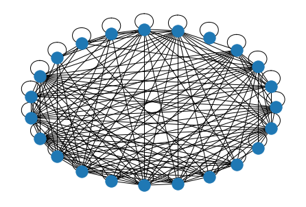

UTS
Contents
UTS#
SOAL NOMER 1 K-Means Data Tweet#
%cd /content/drive/MyDrive/webmining
/content/drive/MyDrive/webmining
!pip install tweepy
Looking in indexes: https://pypi.org/simple, https://us-python.pkg.dev/colab-wheels/public/simple/
Requirement already satisfied: tweepy in /usr/local/lib/python3.7/dist-packages (3.10.0)
Requirement already satisfied: requests[socks]>=2.11.1 in /usr/local/lib/python3.7/dist-packages (from tweepy) (2.23.0)
Requirement already satisfied: six>=1.10.0 in /usr/local/lib/python3.7/dist-packages (from tweepy) (1.15.0)
Requirement already satisfied: requests-oauthlib>=0.7.0 in /usr/local/lib/python3.7/dist-packages (from tweepy) (1.3.1)
Requirement already satisfied: oauthlib>=3.0.0 in /usr/local/lib/python3.7/dist-packages (from requests-oauthlib>=0.7.0->tweepy) (3.2.1)
Requirement already satisfied: urllib3!=1.25.0,!=1.25.1,<1.26,>=1.21.1 in /usr/local/lib/python3.7/dist-packages (from requests[socks]>=2.11.1->tweepy) (1.25.11)
Requirement already satisfied: chardet<4,>=3.0.2 in /usr/local/lib/python3.7/dist-packages (from requests[socks]>=2.11.1->tweepy) (3.0.4)
Requirement already satisfied: idna<3,>=2.5 in /usr/local/lib/python3.7/dist-packages (from requests[socks]>=2.11.1->tweepy) (2.10)
Requirement already satisfied: certifi>=2017.4.17 in /usr/local/lib/python3.7/dist-packages (from requests[socks]>=2.11.1->tweepy) (2022.9.24)
Requirement already satisfied: PySocks!=1.5.7,>=1.5.6 in /usr/local/lib/python3.7/dist-packages (from requests[socks]>=2.11.1->tweepy) (1.7.1)
import tweepy
import pandas as pd
api_key = "lqgLBXUJ5tJhVYO7az2B8vUIp"
api_secret_key = "pFWM22HPhrCVL62mnoIa7ieZHAWTryul1roDijtRqcRBUG6Cys"
access_token = "1569722764730441728-KrphYI34NI8l7HBLOVTCMKaVdELURf"
access_token_secret = "RyJBUD5UoWpunYeS6u9G4NwKnvS8VSkPa7fOIy6AgGEAy"
auth = tweepy.OAuthHandler(api_key, api_secret_key)
auth.set_access_token(access_token, access_token_secret)
api = tweepy.API(auth)
search = api.search(q="#kanjuruhan", lang="id", count=50)
data = []
for tweet in search:
print(tweet.text)
data.append(tweet.text)
RT @republikaonline: Penghapusan dilakukan beberapa saat setelah peristiwa terjadi. #Kanjuruhan #CCTV #TGIPF https://t.co/wqrlKoclOW
RT @republikaonline: Penghapusan dilakukan beberapa saat setelah peristiwa terjadi. #Kanjuruhan #CCTV #TGIPF https://t.co/wqrlKoclOW
RT @republikaonline: Penghapusan dilakukan beberapa saat setelah peristiwa terjadi. #Kanjuruhan #CCTV #TGIPF https://t.co/wqrlKoclOW
RT @Shohifah_Shf: Semoga cepat ketemu orang ini😶⤵️
#UsutTuntasTragediKanjuruhan #kanjuruhan #AremaniaBerduka #KanjuruhanBerdukaCita #provok…
RT @republikaonline: Penghapusan dilakukan beberapa saat setelah peristiwa terjadi. #Kanjuruhan #CCTV #TGIPF https://t.co/wqrlKoclOW
RT @LaNyallaAcademy: @OkaSaptono2 @LaNyallaMM1 @mohmahfudmd @DivHumas_Polri TPF Aremania Simpulkan, Tragedi Kanjuruhan Bukan Kerusuhan, Tet…
Presiden Republik Indonesia, Joko Widodo, menyampaikan bahwa, Stadion Kanjuruhan Malang akan diruntuhkan. Simak inf… https://t.co/CKUkq5NUJ4
RT @republikaonline: Penghapusan dilakukan beberapa saat setelah peristiwa terjadi. #Kanjuruhan #CCTV #TGIPF https://t.co/wqrlKoclOW
RT @republikaonline: Penghapusan dilakukan beberapa saat setelah peristiwa terjadi. #Kanjuruhan #CCTV #TGIPF https://t.co/wqrlKoclOW
RT @GOAL_ID: Direktur operasional PT Liga Indonesia Baru (LIB) Sudjarno, angkat bicara terkait pertemuan dengan Kapolres Malang membahas la…
RT @GOAL_ID: Stadion Kanjuruhan yang menjadi tempat tragedi pada 1 Oktober lalu, akan dirobohkan oleh pemerintah dalam waktu dekat.
#Kanju…
RT @GOAL_ID: Jumlah korban jiwa akibat tragedi Kanjuruhan di Malang bertambah satu orang, dengan demikian total 133 telah dinyatakan mening…
Lagi, Korban Tragedi Kanjuruhan Bertambah Jadi 133 Orang https://t.co/Ss8TL5akys lewat @KanalnewsC #Kanjuruhan #TRAGEDIKANJURUHAN
JOKOWI : STADION KANJURUHAN AKAN KITA ROBOHKAN DAN DIBANGUN KEMBALI SESUAI STANDAR FIFA #jokowi… https://t.co/mpQk5sJdhk
RT @GOAL_ID: Stadion Kanjuruhan yang menjadi tempat tragedi pada 1 Oktober lalu, akan dirobohkan oleh pemerintah dalam waktu dekat.
#Kanju…
RT @MCAOps: KPPPA mengungkapkan jumlah anak yang menjadi korban meninggal dunia dalam tragedi di Stadion Kanjuruhan, Kabupaten Malang, Jawa…
RT @republikaonline: Penghapusan dilakukan beberapa saat setelah peristiwa terjadi. #Kanjuruhan #CCTV #TGIPF https://t.co/wqrlKoclOW
RT @republikaonline: Penghapusan dilakukan beberapa saat setelah peristiwa terjadi. #Kanjuruhan #CCTV #TGIPF https://t.co/wqrlKoclOW
RT @republikaonline: Penghapusan dilakukan beberapa saat setelah peristiwa terjadi. #Kanjuruhan #CCTV #TGIPF https://t.co/wqrlKoclOW
Tragedi #Kanjuruhan dikarenakan ada gosokan PSI via penjual es dawet dan oleh sebab itu mari kita bongkar stadionny… https://t.co/CtI0MLWVnS
RT @republikaonline: Penghapusan dilakukan beberapa saat setelah peristiwa terjadi. #Kanjuruhan #CCTV #TGIPF https://t.co/wqrlKoclOW
RT @dw_indonesia: Setelah bertemu Presiden @FIFAcom Gianni Infantino, Presiden @jokowi hari Selasa (18/10) memastikan bahwa Stadion #Kanjur…
Ibuku pernh cerita klu dulu para buyut uda doain buat ank turunannya ; "jgn sampe ank cucu ku ada yg jadi p*lis*/ni… https://t.co/kViFtDq7Rg
Korban Meninggal Dunia Tragedi Kanjuruhan Bertambah 1, Ini Luka yang Dialaminya
#kanjuruhan https://t.co/b5xwDaJ4KA
RT @republikaonline: Penghapusan dilakukan beberapa saat setelah peristiwa terjadi. #Kanjuruhan #CCTV #TGIPF https://t.co/wqrlKoclOW
Piala Dunia U-20, Jokowi dan Presiden FIFA Sepakat Kaji Ulang Sepak Bola Indonesia #Jokowi #GianniInfantino… https://t.co/sCmyziaWaq
RT @republikaonline: Penghapusan dilakukan beberapa saat setelah peristiwa terjadi. #Kanjuruhan #CCTV #TGIPF https://t.co/wqrlKoclOW
ERICK THOHIR INGATKAN AGAR TRAGEDI KANJURUHAN JANGAN SAMPAI TERULANG KEMBALI
#erickthohir #erickthohirsolusirakyat… https://t.co/Yy22OWT8DD
RT @MCAOps: KPPPA mengungkapkan jumlah anak yang menjadi korban meninggal dunia dalam tragedi di Stadion Kanjuruhan, Kabupaten Malang, Jawa…
RT @republikaonline: Penghapusan dilakukan beberapa saat setelah peristiwa terjadi. #Kanjuruhan #CCTV #TGIPF https://t.co/wqrlKoclOW
RT @republikaonline: Penghapusan dilakukan beberapa saat setelah peristiwa terjadi. #Kanjuruhan #CCTV #TGIPF https://t.co/wqrlKoclOW
RT @republikaonline: Penghapusan dilakukan beberapa saat setelah peristiwa terjadi. #Kanjuruhan #CCTV #TGIPF https://t.co/wqrlKoclOW
RT @republikaonline: Penghapusan dilakukan beberapa saat setelah peristiwa terjadi. #Kanjuruhan #CCTV #TGIPF https://t.co/wqrlKoclOW
Presiden Jokowi bertemu dengan Presiden FIFA Gianni Infantino di Istana Merdeka, Selasa (18/10/2022) siang. Ada beb… https://t.co/DvLV8rdVLE
RT @republikaonline: Penghapusan dilakukan beberapa saat setelah peristiwa terjadi. #Kanjuruhan #CCTV #TGIPF https://t.co/wqrlKoclOW
RT @GOAL_ID: Stadion Kanjuruhan yang menjadi tempat tragedi pada 1 Oktober lalu, akan dirobohkan oleh pemerintah dalam waktu dekat.
#Kanju…
Selengkapnya, klik link kumparan berikut.
https://t.co/KL4KHIFNBT
#berita #kanjuruhan #tragedikanjuruhan… https://t.co/tEIY0UwbEg
RT @republikaonline: Penghapusan dilakukan beberapa saat setelah peristiwa terjadi. #Kanjuruhan #CCTV #TGIPF https://t.co/wqrlKoclOW
Stadion Kanjuruhan tak henti hentinya menjadi topik yang terus disorot oleh masyarakat karena meninggalkan duka yan… https://t.co/a25LAXQam1
Jokowi Konfirmasi Bakal Rubuhkan Stadion Kanjuruhan Usai Konsultasi dengan Presiden FIFA https://t.co/37218ZnXdT ba… https://t.co/5pXe2uQZXj
@jokowi Salut sih sama diplomasi pemerintah Indonesia terhadap FIFA tp please benahi dulu pak sepakbolanya, dimulai dari PSSI. #Kanjuruhan
RT @republikaonline: Penghapusan dilakukan beberapa saat setelah peristiwa terjadi. #Kanjuruhan #CCTV #TGIPF https://t.co/wqrlKoclOW
RT @MCAOps: KPPPA mengungkapkan jumlah anak yang menjadi korban meninggal dunia dalam tragedi di Stadion Kanjuruhan, Kabupaten Malang, Jawa…
RT @MCAOps: KPPPA mengungkapkan jumlah anak yang menjadi korban meninggal dunia dalam tragedi di Stadion Kanjuruhan, Kabupaten Malang, Jawa…
RT @republikaonline: Penghapusan dilakukan beberapa saat setelah peristiwa terjadi. #Kanjuruhan #CCTV #TGIPF https://t.co/wqrlKoclOW
RT @LaNyallaAcademy: @OkaSaptono2 @LaNyallaMM1 @mohmahfudmd @DivHumas_Polri TPF Aremania Simpulkan, Tragedi Kanjuruhan Bukan Kerusuhan, Tet…
RT @LaNyallaAcademy: @OkaSaptono2 @LaNyallaMM1 @mohmahfudmd @DivHumas_Polri TPF Aremania Simpulkan, Tragedi Kanjuruhan Bukan Kerusuhan, Tet…
RT @LaNyallaAcademy: @OkaSaptono2 @LaNyallaMM1 @mohmahfudmd @DivHumas_Polri TPF Aremania Simpulkan, Tragedi Kanjuruhan Bukan Kerusuhan, Tet…
RT @LaNyallaAcademy: @OkaSaptono2 @LaNyallaMM1 @mohmahfudmd @DivHumas_Polri TPF Aremania Simpulkan, Tragedi Kanjuruhan Bukan Kerusuhan, Tet…
RT @LaNyallaAcademy: @OkaSaptono2 @LaNyallaMM1 @mohmahfudmd @DivHumas_Polri TPF Aremania Simpulkan, Tragedi Kanjuruhan Bukan Kerusuhan, Tet…
# print(data)
df = pd.DataFrame(data)
df
df.to_csv("kanjuruhan.csv", index=False)
!pip install pandas
Looking in indexes: https://pypi.org/simple, https://us-python.pkg.dev/colab-wheels/public/simple/
Requirement already satisfied: pandas in /usr/local/lib/python3.7/dist-packages (1.3.5)
Requirement already satisfied: numpy>=1.17.3 in /usr/local/lib/python3.7/dist-packages (from pandas) (1.21.6)
Requirement already satisfied: pytz>=2017.3 in /usr/local/lib/python3.7/dist-packages (from pandas) (2022.4)
Requirement already satisfied: python-dateutil>=2.7.3 in /usr/local/lib/python3.7/dist-packages (from pandas) (2.8.2)
Requirement already satisfied: six>=1.5 in /usr/local/lib/python3.7/dist-packages (from python-dateutil>=2.7.3->pandas) (1.15.0)
import pandas as pd
import numpy as np
!pip install Sastrawi
Looking in indexes: https://pypi.org/simple, https://us-python.pkg.dev/colab-wheels/public/simple/
Requirement already satisfied: Sastrawi in /usr/local/lib/python3.7/dist-packages (1.0.1)
!pip install swifter
Looking in indexes: https://pypi.org/simple, https://us-python.pkg.dev/colab-wheels/public/simple/
Requirement already satisfied: swifter in /usr/local/lib/python3.7/dist-packages (1.3.4)
Requirement already satisfied: pandas>=1.0.0 in /usr/local/lib/python3.7/dist-packages (from swifter) (1.3.5)
Requirement already satisfied: tqdm>=4.33.0 in /usr/local/lib/python3.7/dist-packages (from swifter) (4.64.1)
Requirement already satisfied: psutil>=5.6.6 in /usr/local/lib/python3.7/dist-packages (from swifter) (5.9.2)
Requirement already satisfied: bleach>=3.1.1 in /usr/local/lib/python3.7/dist-packages (from swifter) (5.0.1)
Requirement already satisfied: parso>0.4.0 in /usr/local/lib/python3.7/dist-packages (from swifter) (0.8.3)
Requirement already satisfied: ipywidgets>=7.0.0 in /usr/local/lib/python3.7/dist-packages (from swifter) (7.7.1)
Requirement already satisfied: dask[dataframe]>=2.10.0 in /usr/local/lib/python3.7/dist-packages (from swifter) (2022.2.0)
Requirement already satisfied: cloudpickle>=0.2.2 in /usr/local/lib/python3.7/dist-packages (from swifter) (1.5.0)
Requirement already satisfied: six>=1.9.0 in /usr/local/lib/python3.7/dist-packages (from bleach>=3.1.1->swifter) (1.15.0)
Requirement already satisfied: webencodings in /usr/local/lib/python3.7/dist-packages (from bleach>=3.1.1->swifter) (0.5.1)
Requirement already satisfied: packaging>=20.0 in /usr/local/lib/python3.7/dist-packages (from dask[dataframe]>=2.10.0->swifter) (21.3)
Requirement already satisfied: fsspec>=0.6.0 in /usr/local/lib/python3.7/dist-packages (from dask[dataframe]>=2.10.0->swifter) (2022.8.2)
Requirement already satisfied: partd>=0.3.10 in /usr/local/lib/python3.7/dist-packages (from dask[dataframe]>=2.10.0->swifter) (1.3.0)
Requirement already satisfied: toolz>=0.8.2 in /usr/local/lib/python3.7/dist-packages (from dask[dataframe]>=2.10.0->swifter) (0.12.0)
Requirement already satisfied: pyyaml>=5.3.1 in /usr/local/lib/python3.7/dist-packages (from dask[dataframe]>=2.10.0->swifter) (6.0)
Requirement already satisfied: numpy>=1.18 in /usr/local/lib/python3.7/dist-packages (from dask[dataframe]>=2.10.0->swifter) (1.21.6)
Requirement already satisfied: jupyterlab-widgets>=1.0.0 in /usr/local/lib/python3.7/dist-packages (from ipywidgets>=7.0.0->swifter) (3.0.3)
Requirement already satisfied: ipython>=4.0.0 in /usr/local/lib/python3.7/dist-packages (from ipywidgets>=7.0.0->swifter) (7.9.0)
Requirement already satisfied: widgetsnbextension~=3.6.0 in /usr/local/lib/python3.7/dist-packages (from ipywidgets>=7.0.0->swifter) (3.6.1)
Requirement already satisfied: ipython-genutils~=0.2.0 in /usr/local/lib/python3.7/dist-packages (from ipywidgets>=7.0.0->swifter) (0.2.0)
Requirement already satisfied: traitlets>=4.3.1 in /usr/local/lib/python3.7/dist-packages (from ipywidgets>=7.0.0->swifter) (5.1.1)
Requirement already satisfied: ipykernel>=4.5.1 in /usr/local/lib/python3.7/dist-packages (from ipywidgets>=7.0.0->swifter) (5.3.4)
Requirement already satisfied: jupyter-client in /usr/local/lib/python3.7/dist-packages (from ipykernel>=4.5.1->ipywidgets>=7.0.0->swifter) (6.1.12)
Requirement already satisfied: tornado>=4.2 in /usr/local/lib/python3.7/dist-packages (from ipykernel>=4.5.1->ipywidgets>=7.0.0->swifter) (6.2)
Requirement already satisfied: decorator in /usr/local/lib/python3.7/dist-packages (from ipython>=4.0.0->ipywidgets>=7.0.0->swifter) (4.4.2)
Requirement already satisfied: pickleshare in /usr/local/lib/python3.7/dist-packages (from ipython>=4.0.0->ipywidgets>=7.0.0->swifter) (0.7.5)
Requirement already satisfied: pygments in /usr/local/lib/python3.7/dist-packages (from ipython>=4.0.0->ipywidgets>=7.0.0->swifter) (2.6.1)
Requirement already satisfied: backcall in /usr/local/lib/python3.7/dist-packages (from ipython>=4.0.0->ipywidgets>=7.0.0->swifter) (0.2.0)
Requirement already satisfied: pexpect in /usr/local/lib/python3.7/dist-packages (from ipython>=4.0.0->ipywidgets>=7.0.0->swifter) (4.8.0)
Requirement already satisfied: jedi>=0.10 in /usr/local/lib/python3.7/dist-packages (from ipython>=4.0.0->ipywidgets>=7.0.0->swifter) (0.18.1)
Requirement already satisfied: setuptools>=18.5 in /usr/local/lib/python3.7/dist-packages (from ipython>=4.0.0->ipywidgets>=7.0.0->swifter) (57.4.0)
Requirement already satisfied: prompt-toolkit<2.1.0,>=2.0.0 in /usr/local/lib/python3.7/dist-packages (from ipython>=4.0.0->ipywidgets>=7.0.0->swifter) (2.0.10)
Requirement already satisfied: pyparsing!=3.0.5,>=2.0.2 in /usr/local/lib/python3.7/dist-packages (from packaging>=20.0->dask[dataframe]>=2.10.0->swifter) (3.0.9)
Requirement already satisfied: python-dateutil>=2.7.3 in /usr/local/lib/python3.7/dist-packages (from pandas>=1.0.0->swifter) (2.8.2)
Requirement already satisfied: pytz>=2017.3 in /usr/local/lib/python3.7/dist-packages (from pandas>=1.0.0->swifter) (2022.4)
Requirement already satisfied: locket in /usr/local/lib/python3.7/dist-packages (from partd>=0.3.10->dask[dataframe]>=2.10.0->swifter) (1.0.0)
Requirement already satisfied: wcwidth in /usr/local/lib/python3.7/dist-packages (from prompt-toolkit<2.1.0,>=2.0.0->ipython>=4.0.0->ipywidgets>=7.0.0->swifter) (0.2.5)
Requirement already satisfied: notebook>=4.4.1 in /usr/local/lib/python3.7/dist-packages (from widgetsnbextension~=3.6.0->ipywidgets>=7.0.0->swifter) (5.5.0)
Requirement already satisfied: jupyter-core>=4.4.0 in /usr/local/lib/python3.7/dist-packages (from notebook>=4.4.1->widgetsnbextension~=3.6.0->ipywidgets>=7.0.0->swifter) (4.11.1)
Requirement already satisfied: nbformat in /usr/local/lib/python3.7/dist-packages (from notebook>=4.4.1->widgetsnbextension~=3.6.0->ipywidgets>=7.0.0->swifter) (5.7.0)
Requirement already satisfied: pyzmq>=17 in /usr/local/lib/python3.7/dist-packages (from notebook>=4.4.1->widgetsnbextension~=3.6.0->ipywidgets>=7.0.0->swifter) (23.2.1)
Requirement already satisfied: terminado>=0.8.1 in /usr/local/lib/python3.7/dist-packages (from notebook>=4.4.1->widgetsnbextension~=3.6.0->ipywidgets>=7.0.0->swifter) (0.13.3)
Requirement already satisfied: nbconvert in /usr/local/lib/python3.7/dist-packages (from notebook>=4.4.1->widgetsnbextension~=3.6.0->ipywidgets>=7.0.0->swifter) (6.5.4)
Requirement already satisfied: Send2Trash in /usr/local/lib/python3.7/dist-packages (from notebook>=4.4.1->widgetsnbextension~=3.6.0->ipywidgets>=7.0.0->swifter) (1.8.0)
Requirement already satisfied: jinja2 in /usr/local/lib/python3.7/dist-packages (from notebook>=4.4.1->widgetsnbextension~=3.6.0->ipywidgets>=7.0.0->swifter) (3.1.2)
Requirement already satisfied: ptyprocess in /usr/local/lib/python3.7/dist-packages (from terminado>=0.8.1->notebook>=4.4.1->widgetsnbextension~=3.6.0->ipywidgets>=7.0.0->swifter) (0.7.0)
Requirement already satisfied: MarkupSafe>=2.0 in /usr/local/lib/python3.7/dist-packages (from jinja2->notebook>=4.4.1->widgetsnbextension~=3.6.0->ipywidgets>=7.0.0->swifter) (2.0.1)
Requirement already satisfied: jupyterlab-pygments in /usr/local/lib/python3.7/dist-packages (from nbconvert->notebook>=4.4.1->widgetsnbextension~=3.6.0->ipywidgets>=7.0.0->swifter) (0.2.2)
Requirement already satisfied: pandocfilters>=1.4.1 in /usr/local/lib/python3.7/dist-packages (from nbconvert->notebook>=4.4.1->widgetsnbextension~=3.6.0->ipywidgets>=7.0.0->swifter) (1.5.0)
Requirement already satisfied: mistune<2,>=0.8.1 in /usr/local/lib/python3.7/dist-packages (from nbconvert->notebook>=4.4.1->widgetsnbextension~=3.6.0->ipywidgets>=7.0.0->swifter) (0.8.4)
Requirement already satisfied: entrypoints>=0.2.2 in /usr/local/lib/python3.7/dist-packages (from nbconvert->notebook>=4.4.1->widgetsnbextension~=3.6.0->ipywidgets>=7.0.0->swifter) (0.4)
Requirement already satisfied: tinycss2 in /usr/local/lib/python3.7/dist-packages (from nbconvert->notebook>=4.4.1->widgetsnbextension~=3.6.0->ipywidgets>=7.0.0->swifter) (1.2.1)
Requirement already satisfied: lxml in /usr/local/lib/python3.7/dist-packages (from nbconvert->notebook>=4.4.1->widgetsnbextension~=3.6.0->ipywidgets>=7.0.0->swifter) (4.9.1)
Requirement already satisfied: defusedxml in /usr/local/lib/python3.7/dist-packages (from nbconvert->notebook>=4.4.1->widgetsnbextension~=3.6.0->ipywidgets>=7.0.0->swifter) (0.7.1)
Requirement already satisfied: beautifulsoup4 in /usr/local/lib/python3.7/dist-packages (from nbconvert->notebook>=4.4.1->widgetsnbextension~=3.6.0->ipywidgets>=7.0.0->swifter) (4.6.3)
Requirement already satisfied: nbclient>=0.5.0 in /usr/local/lib/python3.7/dist-packages (from nbconvert->notebook>=4.4.1->widgetsnbextension~=3.6.0->ipywidgets>=7.0.0->swifter) (0.5.13)
Requirement already satisfied: nest-asyncio in /usr/local/lib/python3.7/dist-packages (from nbclient>=0.5.0->nbconvert->notebook>=4.4.1->widgetsnbextension~=3.6.0->ipywidgets>=7.0.0->swifter) (1.5.6)
Requirement already satisfied: jsonschema>=2.6 in /usr/local/lib/python3.7/dist-packages (from nbformat->notebook>=4.4.1->widgetsnbextension~=3.6.0->ipywidgets>=7.0.0->swifter) (3.2.0)
Requirement already satisfied: importlib-metadata>=3.6 in /usr/local/lib/python3.7/dist-packages (from nbformat->notebook>=4.4.1->widgetsnbextension~=3.6.0->ipywidgets>=7.0.0->swifter) (4.13.0)
Requirement already satisfied: fastjsonschema in /usr/local/lib/python3.7/dist-packages (from nbformat->notebook>=4.4.1->widgetsnbextension~=3.6.0->ipywidgets>=7.0.0->swifter) (2.16.2)
Requirement already satisfied: typing-extensions>=3.6.4 in /usr/local/lib/python3.7/dist-packages (from importlib-metadata>=3.6->nbformat->notebook>=4.4.1->widgetsnbextension~=3.6.0->ipywidgets>=7.0.0->swifter) (4.1.1)
Requirement already satisfied: zipp>=0.5 in /usr/local/lib/python3.7/dist-packages (from importlib-metadata>=3.6->nbformat->notebook>=4.4.1->widgetsnbextension~=3.6.0->ipywidgets>=7.0.0->swifter) (3.9.0)
Requirement already satisfied: pyrsistent>=0.14.0 in /usr/local/lib/python3.7/dist-packages (from jsonschema>=2.6->nbformat->notebook>=4.4.1->widgetsnbextension~=3.6.0->ipywidgets>=7.0.0->swifter) (0.18.1)
Requirement already satisfied: attrs>=17.4.0 in /usr/local/lib/python3.7/dist-packages (from jsonschema>=2.6->nbformat->notebook>=4.4.1->widgetsnbextension~=3.6.0->ipywidgets>=7.0.0->swifter) (21.4.0)
!pip install nltk
Looking in indexes: https://pypi.org/simple, https://us-python.pkg.dev/colab-wheels/public/simple/
Requirement already satisfied: nltk in /usr/local/lib/python3.7/dist-packages (3.7)
Requirement already satisfied: joblib in /usr/local/lib/python3.7/dist-packages (from nltk) (1.2.0)
Requirement already satisfied: click in /usr/local/lib/python3.7/dist-packages (from nltk) (7.1.2)
Requirement already satisfied: tqdm in /usr/local/lib/python3.7/dist-packages (from nltk) (4.64.1)
Requirement already satisfied: regex>=2021.8.3 in /usr/local/lib/python3.7/dist-packages (from nltk) (2022.3.2)
data = pd.read_csv("kanjuruhan.csv")
data
| 0 | |
|---|---|
| 0 | RT @republikaonline: Penghapusan dilakukan beb... |
| 1 | RT @republikaonline: Penghapusan dilakukan beb... |
| 2 | RT @republikaonline: Penghapusan dilakukan beb... |
| 3 | RT @Shohifah_Shf: Semoga cepat ketemu orang in... |
| 4 | RT @republikaonline: Penghapusan dilakukan beb... |
| 5 | RT @LaNyallaAcademy: @OkaSaptono2 @LaNyallaMM1... |
| 6 | Presiden Republik Indonesia, Joko Widodo, meny... |
| 7 | RT @republikaonline: Penghapusan dilakukan beb... |
| 8 | RT @republikaonline: Penghapusan dilakukan beb... |
| 9 | RT @GOAL_ID: Direktur operasional PT Liga Indo... |
| 10 | RT @GOAL_ID: Stadion Kanjuruhan yang menjadi t... |
| 11 | RT @GOAL_ID: Jumlah korban jiwa akibat tragedi... |
| 12 | Lagi, Korban Tragedi Kanjuruhan Bertambah Jadi... |
| 13 | JOKOWI : STADION KANJURUHAN AKAN KITA ROBOHKAN... |
| 14 | RT @GOAL_ID: Stadion Kanjuruhan yang menjadi t... |
| 15 | RT @MCAOps: KPPPA mengungkapkan jumlah anak ya... |
| 16 | RT @republikaonline: Penghapusan dilakukan beb... |
| 17 | RT @republikaonline: Penghapusan dilakukan beb... |
| 18 | RT @republikaonline: Penghapusan dilakukan beb... |
| 19 | Tragedi #Kanjuruhan dikarenakan ada gosokan PS... |
| 20 | RT @republikaonline: Penghapusan dilakukan beb... |
| 21 | RT @dw_indonesia: Setelah bertemu Presiden @FI... |
| 22 | Ibuku pernh cerita klu dulu para buyut uda doa... |
| 23 | Korban Meninggal Dunia Tragedi Kanjuruhan Bert... |
| 24 | RT @republikaonline: Penghapusan dilakukan beb... |
| 25 | Piala Dunia U-20, Jokowi dan Presiden FIFA Sep... |
| 26 | RT @republikaonline: Penghapusan dilakukan beb... |
| 27 | ERICK THOHIR INGATKAN AGAR TRAGEDI KANJURUHAN ... |
| 28 | RT @MCAOps: KPPPA mengungkapkan jumlah anak ya... |
| 29 | RT @republikaonline: Penghapusan dilakukan beb... |
| 30 | RT @republikaonline: Penghapusan dilakukan beb... |
| 31 | RT @republikaonline: Penghapusan dilakukan beb... |
| 32 | RT @republikaonline: Penghapusan dilakukan beb... |
| 33 | Presiden Jokowi bertemu dengan Presiden FIFA G... |
| 34 | RT @republikaonline: Penghapusan dilakukan beb... |
| 35 | RT @GOAL_ID: Stadion Kanjuruhan yang menjadi t... |
| 36 | Selengkapnya, klik link kumparan berikut.\nhtt... |
| 37 | RT @republikaonline: Penghapusan dilakukan beb... |
| 38 | Stadion Kanjuruhan tak henti hentinya menjadi ... |
| 39 | Jokowi Konfirmasi Bakal Rubuhkan Stadion Kanju... |
| 40 | @jokowi Salut sih sama diplomasi pemerintah In... |
| 41 | RT @republikaonline: Penghapusan dilakukan beb... |
| 42 | RT @MCAOps: KPPPA mengungkapkan jumlah anak ya... |
| 43 | RT @MCAOps: KPPPA mengungkapkan jumlah anak ya... |
| 44 | RT @republikaonline: Penghapusan dilakukan beb... |
| 45 | RT @LaNyallaAcademy: @OkaSaptono2 @LaNyallaMM1... |
| 46 | RT @LaNyallaAcademy: @OkaSaptono2 @LaNyallaMM1... |
| 47 | RT @LaNyallaAcademy: @OkaSaptono2 @LaNyallaMM1... |
| 48 | RT @LaNyallaAcademy: @OkaSaptono2 @LaNyallaMM1... |
| 49 | RT @LaNyallaAcademy: @OkaSaptono2 @LaNyallaMM1... |
data['0'] = data['0'].str.lower()
data['0']
0 rt @republikaonline: penghapusan dilakukan beb...
1 rt @republikaonline: penghapusan dilakukan beb...
2 rt @republikaonline: penghapusan dilakukan beb...
3 rt @shohifah_shf: semoga cepat ketemu orang in...
4 rt @republikaonline: penghapusan dilakukan beb...
5 rt @lanyallaacademy: @okasaptono2 @lanyallamm1...
6 presiden republik indonesia, joko widodo, meny...
7 rt @republikaonline: penghapusan dilakukan beb...
8 rt @republikaonline: penghapusan dilakukan beb...
9 rt @goal_id: direktur operasional pt liga indo...
10 rt @goal_id: stadion kanjuruhan yang menjadi t...
11 rt @goal_id: jumlah korban jiwa akibat tragedi...
12 lagi, korban tragedi kanjuruhan bertambah jadi...
13 jokowi : stadion kanjuruhan akan kita robohkan...
14 rt @goal_id: stadion kanjuruhan yang menjadi t...
15 rt @mcaops: kpppa mengungkapkan jumlah anak ya...
16 rt @republikaonline: penghapusan dilakukan beb...
17 rt @republikaonline: penghapusan dilakukan beb...
18 rt @republikaonline: penghapusan dilakukan beb...
19 tragedi #kanjuruhan dikarenakan ada gosokan ps...
20 rt @republikaonline: penghapusan dilakukan beb...
21 rt @dw_indonesia: setelah bertemu presiden @fi...
22 ibuku pernh cerita klu dulu para buyut uda doa...
23 korban meninggal dunia tragedi kanjuruhan bert...
24 rt @republikaonline: penghapusan dilakukan beb...
25 piala dunia u-20, jokowi dan presiden fifa sep...
26 rt @republikaonline: penghapusan dilakukan beb...
27 erick thohir ingatkan agar tragedi kanjuruhan ...
28 rt @mcaops: kpppa mengungkapkan jumlah anak ya...
29 rt @republikaonline: penghapusan dilakukan beb...
30 rt @republikaonline: penghapusan dilakukan beb...
31 rt @republikaonline: penghapusan dilakukan beb...
32 rt @republikaonline: penghapusan dilakukan beb...
33 presiden jokowi bertemu dengan presiden fifa g...
34 rt @republikaonline: penghapusan dilakukan beb...
35 rt @goal_id: stadion kanjuruhan yang menjadi t...
36 selengkapnya, klik link kumparan berikut.\nhtt...
37 rt @republikaonline: penghapusan dilakukan beb...
38 stadion kanjuruhan tak henti hentinya menjadi ...
39 jokowi konfirmasi bakal rubuhkan stadion kanju...
40 @jokowi salut sih sama diplomasi pemerintah in...
41 rt @republikaonline: penghapusan dilakukan beb...
42 rt @mcaops: kpppa mengungkapkan jumlah anak ya...
43 rt @mcaops: kpppa mengungkapkan jumlah anak ya...
44 rt @republikaonline: penghapusan dilakukan beb...
45 rt @lanyallaacademy: @okasaptono2 @lanyallamm1...
46 rt @lanyallaacademy: @okasaptono2 @lanyallamm1...
47 rt @lanyallaacademy: @okasaptono2 @lanyallamm1...
48 rt @lanyallaacademy: @okasaptono2 @lanyallamm1...
49 rt @lanyallaacademy: @okasaptono2 @lanyallamm1...
Name: 0, dtype: object
import string
import re #regex library
# import word_tokenize & FreqDist from NLTK
from nltk.tokenize import word_tokenize
from nltk.probability import FreqDist
# ------ Tokenizing ---------
def remove_special(text):
# remove tab, new line, ans back slice
text = text.replace('\\t'," ").replace('\\n'," ").replace('\\u'," ").replace('\\'," ").replace('\\f'," ").replace('\\r'," ")
# remove non ASCII (emoticon, chinese word, .etc)
text = text.encode('ascii', 'replace').decode('ascii')
# remove mention, link, hashtag
text = ' '.join(re.sub("([@#][A-Za-z0-9]+)|(\w+:\/\/\S+)"," ", text).split())
# remove incomplete URL
return text.replace("http://", " ").replace("https://", " ")
data['0'] = data['0'].apply(remove_special)
data['0']
0 rt : penghapusan dilakukan beberapa saat setel...
1 rt : penghapusan dilakukan beberapa saat setel...
2 rt : penghapusan dilakukan beberapa saat setel...
3 rt _shf: semoga cepat ketemu orang ini??? ?
4 rt : penghapusan dilakukan beberapa saat setel...
5 rt : _polri tpf aremania simpulkan, tragedi ka...
6 presiden republik indonesia, joko widodo, meny...
7 rt : penghapusan dilakukan beberapa saat setel...
8 rt : penghapusan dilakukan beberapa saat setel...
9 rt _id: direktur operasional pt liga indonesia...
10 rt _id: stadion kanjuruhan yang menjadi tempat...
11 rt _id: jumlah korban jiwa akibat tragedi kanj...
12 lagi, korban tragedi kanjuruhan bertambah jadi...
13 jokowi : stadion kanjuruhan akan kita robohkan...
14 rt _id: stadion kanjuruhan yang menjadi tempat...
15 rt : kpppa mengungkapkan jumlah anak yang menj...
16 rt : penghapusan dilakukan beberapa saat setel...
17 rt : penghapusan dilakukan beberapa saat setel...
18 rt : penghapusan dilakukan beberapa saat setel...
19 tragedi dikarenakan ada gosokan psi via penjua...
20 rt : penghapusan dilakukan beberapa saat setel...
21 rt _indonesia: setelah bertemu presiden gianni...
22 ibuku pernh cerita klu dulu para buyut uda doa...
23 korban meninggal dunia tragedi kanjuruhan bert...
24 rt : penghapusan dilakukan beberapa saat setel...
25 piala dunia u-20, jokowi dan presiden fifa sep...
26 rt : penghapusan dilakukan beberapa saat setel...
27 erick thohir ingatkan agar tragedi kanjuruhan ...
28 rt : kpppa mengungkapkan jumlah anak yang menj...
29 rt : penghapusan dilakukan beberapa saat setel...
30 rt : penghapusan dilakukan beberapa saat setel...
31 rt : penghapusan dilakukan beberapa saat setel...
32 rt : penghapusan dilakukan beberapa saat setel...
33 presiden jokowi bertemu dengan presiden fifa g...
34 rt : penghapusan dilakukan beberapa saat setel...
35 rt _id: stadion kanjuruhan yang menjadi tempat...
36 selengkapnya, klik link kumparan berikut. ?
37 rt : penghapusan dilakukan beberapa saat setel...
38 stadion kanjuruhan tak henti hentinya menjadi ...
39 jokowi konfirmasi bakal rubuhkan stadion kanju...
40 salut sih sama diplomasi pemerintah indonesia ...
41 rt : penghapusan dilakukan beberapa saat setel...
42 rt : kpppa mengungkapkan jumlah anak yang menj...
43 rt : kpppa mengungkapkan jumlah anak yang menj...
44 rt : penghapusan dilakukan beberapa saat setel...
45 rt : _polri tpf aremania simpulkan, tragedi ka...
46 rt : _polri tpf aremania simpulkan, tragedi ka...
47 rt : _polri tpf aremania simpulkan, tragedi ka...
48 rt : _polri tpf aremania simpulkan, tragedi ka...
49 rt : _polri tpf aremania simpulkan, tragedi ka...
Name: 0, dtype: object
def remove_number(text):
return re.sub(r"\d+", "", text)
data['0'] = data['0'].apply(remove_number)
data['0']
0 rt : penghapusan dilakukan beberapa saat setel...
1 rt : penghapusan dilakukan beberapa saat setel...
2 rt : penghapusan dilakukan beberapa saat setel...
3 rt _shf: semoga cepat ketemu orang ini??? ?
4 rt : penghapusan dilakukan beberapa saat setel...
5 rt : _polri tpf aremania simpulkan, tragedi ka...
6 presiden republik indonesia, joko widodo, meny...
7 rt : penghapusan dilakukan beberapa saat setel...
8 rt : penghapusan dilakukan beberapa saat setel...
9 rt _id: direktur operasional pt liga indonesia...
10 rt _id: stadion kanjuruhan yang menjadi tempat...
11 rt _id: jumlah korban jiwa akibat tragedi kanj...
12 lagi, korban tragedi kanjuruhan bertambah jadi...
13 jokowi : stadion kanjuruhan akan kita robohkan...
14 rt _id: stadion kanjuruhan yang menjadi tempat...
15 rt : kpppa mengungkapkan jumlah anak yang menj...
16 rt : penghapusan dilakukan beberapa saat setel...
17 rt : penghapusan dilakukan beberapa saat setel...
18 rt : penghapusan dilakukan beberapa saat setel...
19 tragedi dikarenakan ada gosokan psi via penjua...
20 rt : penghapusan dilakukan beberapa saat setel...
21 rt _indonesia: setelah bertemu presiden gianni...
22 ibuku pernh cerita klu dulu para buyut uda doa...
23 korban meninggal dunia tragedi kanjuruhan bert...
24 rt : penghapusan dilakukan beberapa saat setel...
25 piala dunia u-, jokowi dan presiden fifa sepak...
26 rt : penghapusan dilakukan beberapa saat setel...
27 erick thohir ingatkan agar tragedi kanjuruhan ...
28 rt : kpppa mengungkapkan jumlah anak yang menj...
29 rt : penghapusan dilakukan beberapa saat setel...
30 rt : penghapusan dilakukan beberapa saat setel...
31 rt : penghapusan dilakukan beberapa saat setel...
32 rt : penghapusan dilakukan beberapa saat setel...
33 presiden jokowi bertemu dengan presiden fifa g...
34 rt : penghapusan dilakukan beberapa saat setel...
35 rt _id: stadion kanjuruhan yang menjadi tempat...
36 selengkapnya, klik link kumparan berikut. ?
37 rt : penghapusan dilakukan beberapa saat setel...
38 stadion kanjuruhan tak henti hentinya menjadi ...
39 jokowi konfirmasi bakal rubuhkan stadion kanju...
40 salut sih sama diplomasi pemerintah indonesia ...
41 rt : penghapusan dilakukan beberapa saat setel...
42 rt : kpppa mengungkapkan jumlah anak yang menj...
43 rt : kpppa mengungkapkan jumlah anak yang menj...
44 rt : penghapusan dilakukan beberapa saat setel...
45 rt : _polri tpf aremania simpulkan, tragedi ka...
46 rt : _polri tpf aremania simpulkan, tragedi ka...
47 rt : _polri tpf aremania simpulkan, tragedi ka...
48 rt : _polri tpf aremania simpulkan, tragedi ka...
49 rt : _polri tpf aremania simpulkan, tragedi ka...
Name: 0, dtype: object
def remove_punctuation(text):
return text.translate(str.maketrans("","",string.punctuation))
data['0'] = data['0'].apply(remove_punctuation)
data['0']
0 rt penghapusan dilakukan beberapa saat setela...
1 rt penghapusan dilakukan beberapa saat setela...
2 rt penghapusan dilakukan beberapa saat setela...
3 rt shf semoga cepat ketemu orang ini
4 rt penghapusan dilakukan beberapa saat setela...
5 rt polri tpf aremania simpulkan tragedi kanju...
6 presiden republik indonesia joko widodo menyam...
7 rt penghapusan dilakukan beberapa saat setela...
8 rt penghapusan dilakukan beberapa saat setela...
9 rt id direktur operasional pt liga indonesia b...
10 rt id stadion kanjuruhan yang menjadi tempat t...
11 rt id jumlah korban jiwa akibat tragedi kanjur...
12 lagi korban tragedi kanjuruhan bertambah jadi ...
13 jokowi stadion kanjuruhan akan kita robohkan ...
14 rt id stadion kanjuruhan yang menjadi tempat t...
15 rt kpppa mengungkapkan jumlah anak yang menja...
16 rt penghapusan dilakukan beberapa saat setela...
17 rt penghapusan dilakukan beberapa saat setela...
18 rt penghapusan dilakukan beberapa saat setela...
19 tragedi dikarenakan ada gosokan psi via penjua...
20 rt penghapusan dilakukan beberapa saat setela...
21 rt indonesia setelah bertemu presiden gianni i...
22 ibuku pernh cerita klu dulu para buyut uda doa...
23 korban meninggal dunia tragedi kanjuruhan bert...
24 rt penghapusan dilakukan beberapa saat setela...
25 piala dunia u jokowi dan presiden fifa sepakat...
26 rt penghapusan dilakukan beberapa saat setela...
27 erick thohir ingatkan agar tragedi kanjuruhan ...
28 rt kpppa mengungkapkan jumlah anak yang menja...
29 rt penghapusan dilakukan beberapa saat setela...
30 rt penghapusan dilakukan beberapa saat setela...
31 rt penghapusan dilakukan beberapa saat setela...
32 rt penghapusan dilakukan beberapa saat setela...
33 presiden jokowi bertemu dengan presiden fifa g...
34 rt penghapusan dilakukan beberapa saat setela...
35 rt id stadion kanjuruhan yang menjadi tempat t...
36 selengkapnya klik link kumparan berikut
37 rt penghapusan dilakukan beberapa saat setela...
38 stadion kanjuruhan tak henti hentinya menjadi ...
39 jokowi konfirmasi bakal rubuhkan stadion kanju...
40 salut sih sama diplomasi pemerintah indonesia ...
41 rt penghapusan dilakukan beberapa saat setela...
42 rt kpppa mengungkapkan jumlah anak yang menja...
43 rt kpppa mengungkapkan jumlah anak yang menja...
44 rt penghapusan dilakukan beberapa saat setela...
45 rt polri tpf aremania simpulkan tragedi kanju...
46 rt polri tpf aremania simpulkan tragedi kanju...
47 rt polri tpf aremania simpulkan tragedi kanju...
48 rt polri tpf aremania simpulkan tragedi kanju...
49 rt polri tpf aremania simpulkan tragedi kanju...
Name: 0, dtype: object
#remove whitespace leading & trailing
def remove_whitespace_LT(text):
return text.strip()
data['0'] = data['0'].apply(remove_whitespace_LT)
#remove multiple whitespace into single whitespace
def remove_whitespace_multiple(text):
return re.sub('\s+',' ',text)
data['0'] = data['0'].apply(remove_whitespace_multiple)
data['0']
0 rt penghapusan dilakukan beberapa saat setelah...
1 rt penghapusan dilakukan beberapa saat setelah...
2 rt penghapusan dilakukan beberapa saat setelah...
3 rt shf semoga cepat ketemu orang ini
4 rt penghapusan dilakukan beberapa saat setelah...
5 rt polri tpf aremania simpulkan tragedi kanjur...
6 presiden republik indonesia joko widodo menyam...
7 rt penghapusan dilakukan beberapa saat setelah...
8 rt penghapusan dilakukan beberapa saat setelah...
9 rt id direktur operasional pt liga indonesia b...
10 rt id stadion kanjuruhan yang menjadi tempat t...
11 rt id jumlah korban jiwa akibat tragedi kanjur...
12 lagi korban tragedi kanjuruhan bertambah jadi ...
13 jokowi stadion kanjuruhan akan kita robohkan d...
14 rt id stadion kanjuruhan yang menjadi tempat t...
15 rt kpppa mengungkapkan jumlah anak yang menjad...
16 rt penghapusan dilakukan beberapa saat setelah...
17 rt penghapusan dilakukan beberapa saat setelah...
18 rt penghapusan dilakukan beberapa saat setelah...
19 tragedi dikarenakan ada gosokan psi via penjua...
20 rt penghapusan dilakukan beberapa saat setelah...
21 rt indonesia setelah bertemu presiden gianni i...
22 ibuku pernh cerita klu dulu para buyut uda doa...
23 korban meninggal dunia tragedi kanjuruhan bert...
24 rt penghapusan dilakukan beberapa saat setelah...
25 piala dunia u jokowi dan presiden fifa sepakat...
26 rt penghapusan dilakukan beberapa saat setelah...
27 erick thohir ingatkan agar tragedi kanjuruhan ...
28 rt kpppa mengungkapkan jumlah anak yang menjad...
29 rt penghapusan dilakukan beberapa saat setelah...
30 rt penghapusan dilakukan beberapa saat setelah...
31 rt penghapusan dilakukan beberapa saat setelah...
32 rt penghapusan dilakukan beberapa saat setelah...
33 presiden jokowi bertemu dengan presiden fifa g...
34 rt penghapusan dilakukan beberapa saat setelah...
35 rt id stadion kanjuruhan yang menjadi tempat t...
36 selengkapnya klik link kumparan berikut
37 rt penghapusan dilakukan beberapa saat setelah...
38 stadion kanjuruhan tak henti hentinya menjadi ...
39 jokowi konfirmasi bakal rubuhkan stadion kanju...
40 salut sih sama diplomasi pemerintah indonesia ...
41 rt penghapusan dilakukan beberapa saat setelah...
42 rt kpppa mengungkapkan jumlah anak yang menjad...
43 rt kpppa mengungkapkan jumlah anak yang menjad...
44 rt penghapusan dilakukan beberapa saat setelah...
45 rt polri tpf aremania simpulkan tragedi kanjur...
46 rt polri tpf aremania simpulkan tragedi kanjur...
47 rt polri tpf aremania simpulkan tragedi kanjur...
48 rt polri tpf aremania simpulkan tragedi kanjur...
49 rt polri tpf aremania simpulkan tragedi kanjur...
Name: 0, dtype: object
# remove single char
def remove_singl_char(text):
return re.sub(r"\b[a-zA-Z]\b", " ", text)
data['0'] = data['0'].apply(remove_singl_char)
data['0']
0 rt penghapusan dilakukan beberapa saat setelah...
1 rt penghapusan dilakukan beberapa saat setelah...
2 rt penghapusan dilakukan beberapa saat setelah...
3 rt shf semoga cepat ketemu orang ini
4 rt penghapusan dilakukan beberapa saat setelah...
5 rt polri tpf aremania simpulkan tragedi kanjur...
6 presiden republik indonesia joko widodo menyam...
7 rt penghapusan dilakukan beberapa saat setelah...
8 rt penghapusan dilakukan beberapa saat setelah...
9 rt id direktur operasional pt liga indonesia b...
10 rt id stadion kanjuruhan yang menjadi tempat t...
11 rt id jumlah korban jiwa akibat tragedi kanjur...
12 lagi korban tragedi kanjuruhan bertambah jadi ...
13 jokowi stadion kanjuruhan akan kita robohkan d...
14 rt id stadion kanjuruhan yang menjadi tempat t...
15 rt kpppa mengungkapkan jumlah anak yang menjad...
16 rt penghapusan dilakukan beberapa saat setelah...
17 rt penghapusan dilakukan beberapa saat setelah...
18 rt penghapusan dilakukan beberapa saat setelah...
19 tragedi dikarenakan ada gosokan psi via penjua...
20 rt penghapusan dilakukan beberapa saat setelah...
21 rt indonesia setelah bertemu presiden gianni i...
22 ibuku pernh cerita klu dulu para buyut uda doa...
23 korban meninggal dunia tragedi kanjuruhan bert...
24 rt penghapusan dilakukan beberapa saat setelah...
25 piala dunia jokowi dan presiden fifa sepakat...
26 rt penghapusan dilakukan beberapa saat setelah...
27 erick thohir ingatkan agar tragedi kanjuruhan ...
28 rt kpppa mengungkapkan jumlah anak yang menjad...
29 rt penghapusan dilakukan beberapa saat setelah...
30 rt penghapusan dilakukan beberapa saat setelah...
31 rt penghapusan dilakukan beberapa saat setelah...
32 rt penghapusan dilakukan beberapa saat setelah...
33 presiden jokowi bertemu dengan presiden fifa g...
34 rt penghapusan dilakukan beberapa saat setelah...
35 rt id stadion kanjuruhan yang menjadi tempat t...
36 selengkapnya klik link kumparan berikut
37 rt penghapusan dilakukan beberapa saat setelah...
38 stadion kanjuruhan tak henti hentinya menjadi ...
39 jokowi konfirmasi bakal rubuhkan stadion kanju...
40 salut sih sama diplomasi pemerintah indonesia ...
41 rt penghapusan dilakukan beberapa saat setelah...
42 rt kpppa mengungkapkan jumlah anak yang menjad...
43 rt kpppa mengungkapkan jumlah anak yang menjad...
44 rt penghapusan dilakukan beberapa saat setelah...
45 rt polri tpf aremania simpulkan tragedi kanjur...
46 rt polri tpf aremania simpulkan tragedi kanjur...
47 rt polri tpf aremania simpulkan tragedi kanjur...
48 rt polri tpf aremania simpulkan tragedi kanjur...
49 rt polri tpf aremania simpulkan tragedi kanjur...
Name: 0, dtype: object
import nltk
nltk.download('punkt')
[nltk_data] Downloading package punkt to /root/nltk_data...
[nltk_data] Package punkt is already up-to-date!
True
# NLTK word Tokenize
def word_tokenize_wrapper(text):
return word_tokenize(text)
data['0'] = data['0'].apply(word_tokenize_wrapper)
data['0']
0 [rt, penghapusan, dilakukan, beberapa, saat, s...
1 [rt, penghapusan, dilakukan, beberapa, saat, s...
2 [rt, penghapusan, dilakukan, beberapa, saat, s...
3 [rt, shf, semoga, cepat, ketemu, orang, ini]
4 [rt, penghapusan, dilakukan, beberapa, saat, s...
5 [rt, polri, tpf, aremania, simpulkan, tragedi,...
6 [presiden, republik, indonesia, joko, widodo, ...
7 [rt, penghapusan, dilakukan, beberapa, saat, s...
8 [rt, penghapusan, dilakukan, beberapa, saat, s...
9 [rt, id, direktur, operasional, pt, liga, indo...
10 [rt, id, stadion, kanjuruhan, yang, menjadi, t...
11 [rt, id, jumlah, korban, jiwa, akibat, tragedi...
12 [lagi, korban, tragedi, kanjuruhan, bertambah,...
13 [jokowi, stadion, kanjuruhan, akan, kita, robo...
14 [rt, id, stadion, kanjuruhan, yang, menjadi, t...
15 [rt, kpppa, mengungkapkan, jumlah, anak, yang,...
16 [rt, penghapusan, dilakukan, beberapa, saat, s...
17 [rt, penghapusan, dilakukan, beberapa, saat, s...
18 [rt, penghapusan, dilakukan, beberapa, saat, s...
19 [tragedi, dikarenakan, ada, gosokan, psi, via,...
20 [rt, penghapusan, dilakukan, beberapa, saat, s...
21 [rt, indonesia, setelah, bertemu, presiden, gi...
22 [ibuku, pernh, cerita, klu, dulu, para, buyut,...
23 [korban, meninggal, dunia, tragedi, kanjuruhan...
24 [rt, penghapusan, dilakukan, beberapa, saat, s...
25 [piala, dunia, jokowi, dan, presiden, fifa, se...
26 [rt, penghapusan, dilakukan, beberapa, saat, s...
27 [erick, thohir, ingatkan, agar, tragedi, kanju...
28 [rt, kpppa, mengungkapkan, jumlah, anak, yang,...
29 [rt, penghapusan, dilakukan, beberapa, saat, s...
30 [rt, penghapusan, dilakukan, beberapa, saat, s...
31 [rt, penghapusan, dilakukan, beberapa, saat, s...
32 [rt, penghapusan, dilakukan, beberapa, saat, s...
33 [presiden, jokowi, bertemu, dengan, presiden, ...
34 [rt, penghapusan, dilakukan, beberapa, saat, s...
35 [rt, id, stadion, kanjuruhan, yang, menjadi, t...
36 [selengkapnya, klik, link, kumparan, berikut]
37 [rt, penghapusan, dilakukan, beberapa, saat, s...
38 [stadion, kanjuruhan, tak, henti, hentinya, me...
39 [jokowi, konfirmasi, bakal, rubuhkan, stadion,...
40 [salut, sih, sama, diplomasi, pemerintah, indo...
41 [rt, penghapusan, dilakukan, beberapa, saat, s...
42 [rt, kpppa, mengungkapkan, jumlah, anak, yang,...
43 [rt, kpppa, mengungkapkan, jumlah, anak, yang,...
44 [rt, penghapusan, dilakukan, beberapa, saat, s...
45 [rt, polri, tpf, aremania, simpulkan, tragedi,...
46 [rt, polri, tpf, aremania, simpulkan, tragedi,...
47 [rt, polri, tpf, aremania, simpulkan, tragedi,...
48 [rt, polri, tpf, aremania, simpulkan, tragedi,...
49 [rt, polri, tpf, aremania, simpulkan, tragedi,...
Name: 0, dtype: object
import nltk
from nltk.corpus import stopwords
nltk.download('stopwords')
[nltk_data] Downloading package stopwords to /root/nltk_data...
[nltk_data] Package stopwords is already up-to-date!
True
list_stopwords = stopwords.words('indonesian')
#Menghapus Stopword dari list token
def stopwords_removal(words):
return [word for word in words if word not in list_stopwords]
data['0'] = data['0'].apply(stopwords_removal)
data['0']
0 [rt, penghapusan, peristiwa]
1 [rt, penghapusan, peristiwa]
2 [rt, penghapusan, peristiwa]
3 [rt, shf, semoga, cepat, ketemu, orang]
4 [rt, penghapusan, peristiwa]
5 [rt, polri, tpf, aremania, simpulkan, tragedi,...
6 [presiden, republik, indonesia, joko, widodo, ...
7 [rt, penghapusan, peristiwa]
8 [rt, penghapusan, peristiwa]
9 [rt, id, direktur, operasional, pt, liga, indo...
10 [rt, id, stadion, kanjuruhan, tragedi, oktober...
11 [rt, id, korban, jiwa, akibat, tragedi, kanjur...
12 [korban, tragedi, kanjuruhan, bertambah, orang]
13 [jokowi, stadion, kanjuruhan, robohkan, dibang...
14 [rt, id, stadion, kanjuruhan, tragedi, oktober...
15 [rt, kpppa, anak, korban, meninggal, dunia, tr...
16 [rt, penghapusan, peristiwa]
17 [rt, penghapusan, peristiwa]
18 [rt, penghapusan, peristiwa]
19 [tragedi, gosokan, psi, via, penjual, es, dawe...
20 [rt, penghapusan, peristiwa]
21 [rt, indonesia, bertemu, presiden, gianni, inf...
22 [ibuku, pernh, cerita, klu, buyut, uda, doain,...
23 [korban, meninggal, dunia, tragedi, kanjuruhan...
24 [rt, penghapusan, peristiwa]
25 [piala, dunia, jokowi, presiden, fifa, sepakat...
26 [rt, penghapusan, peristiwa]
27 [erick, thohir, ingatkan, tragedi, kanjuruhan,...
28 [rt, kpppa, anak, korban, meninggal, dunia, tr...
29 [rt, penghapusan, peristiwa]
30 [rt, penghapusan, peristiwa]
31 [rt, penghapusan, peristiwa]
32 [rt, penghapusan, peristiwa]
33 [presiden, jokowi, bertemu, presiden, fifa, gi...
34 [rt, penghapusan, peristiwa]
35 [rt, id, stadion, kanjuruhan, tragedi, oktober...
36 [selengkapnya, klik, link, kumparan]
37 [rt, penghapusan, peristiwa]
38 [stadion, kanjuruhan, henti, hentinya, topik, ...
39 [jokowi, konfirmasi, rubuhkan, stadion, kanjur...
40 [salut, sih, diplomasi, pemerintah, indonesia,...
41 [rt, penghapusan, peristiwa]
42 [rt, kpppa, anak, korban, meninggal, dunia, tr...
43 [rt, kpppa, anak, korban, meninggal, dunia, tr...
44 [rt, penghapusan, peristiwa]
45 [rt, polri, tpf, aremania, simpulkan, tragedi,...
46 [rt, polri, tpf, aremania, simpulkan, tragedi,...
47 [rt, polri, tpf, aremania, simpulkan, tragedi,...
48 [rt, polri, tpf, aremania, simpulkan, tragedi,...
49 [rt, polri, tpf, aremania, simpulkan, tragedi,...
Name: 0, dtype: object
from Sastrawi.Stemmer.StemmerFactory import StemmerFactory
import swifter
# create stemmer
factory = StemmerFactory()
stemmer = factory.create_stemmer()
# stemmed
def stemmed_wrapper(term):
return stemmer.stem(term)
term_dict = {}
for document in data['0']:
for term in document:
if term not in term_dict:
term_dict[term] = ' '
print(len(term_dict))
print("------------------------")
for term in term_dict:
term_dict[term] = stemmed_wrapper(term)
print(term,":" ,term_dict[term])
print(term_dict)
print("------------------------")
# apply stemmed term to dataframe
def get_stemmed_term(document):
return [term_dict[term] for term in document]
data['0'] = data['0'].swifter.apply(get_stemmed_term)
data['0']
130
------------------------
rt : rt
penghapusan : hapus
peristiwa : peristiwa
shf : shf
semoga : moga
cepat : cepat
ketemu : ketemu
orang : orang
polri : polri
tpf : tpf
aremania : aremania
simpulkan : simpul
tragedi : tragedi
kanjuruhan : kanjuruhan
kerusuhan : rusuh
tet : tet
presiden : presiden
republik : republik
indonesia : indonesia
joko : joko
widodo : widodo
stadion : stadion
malang : malang
diruntuhkan : runtuh
simak : simak
inf : inf
id : id
direktur : direktur
operasional : operasional
pt : pt
liga : liga
lib : lib
sudjarno : sudjarno
angkat : angkat
bicara : bicara
terkait : kait
pertemuan : temu
kapolres : kapolres
membahas : bahas
la : la
oktober : oktober
dirobohkan : roboh
pemerintah : perintah
korban : korban
jiwa : jiwa
akibat : akibat
bertambah : tambah
total : total
dinyatakan : nyata
mening : ning
jokowi : jokowi
robohkan : roboh
dibangun : bangun
sesuai : sesuai
standar : standar
fifa : fifa
kpppa : kpppa
anak : anak
meninggal : tinggal
dunia : dunia
kabupaten : kabupaten
jawa : jawa
gosokan : gosok
psi : psi
via : via
penjual : jual
es : es
dawet : dawet
mari : mari
bongkar : bongkar
stadionny : stadionny
bertemu : temu
gianni : gianni
infantino : infantino
selasa : selasa
ibuku : ibu
pernh : pernh
cerita : cerita
klu : klu
buyut : buyut
uda : uda
doain : doain
ank : ank
turunannya : turun
jgn : jgn
sampe : sampe
cucu : cucu
ku : ku
yg : yg
plisni : plisni
luka : luka
dialaminya : alam
piala : piala
sepakat : sepakat
kaji : kaji
ulang : ulang
sepak : sepak
bola : bola
erick : erick
thohir : thohir
ingatkan : ingat
terulang : ulang
istana : istana
merdeka : merdeka
siang : siang
beb : beb
selengkapnya : lengkap
klik : klik
link : link
kumparan : kumpar
henti : henti
hentinya : henti
topik : topik
disorot : sorot
masyarakat : masyarakat
meninggalkan : tinggal
duka : duka
yan : yan
konfirmasi : konfirmasi
rubuhkan : rubuhkan
konsultasi : konsultasi
ba : ba
salut : salut
sih : sih
diplomasi : diplomasi
tp : tp
please : please
benahi : benah
sepakbolanya : sepakbolanya
pssi : pssi
{'rt': 'rt', 'penghapusan': 'hapus', 'peristiwa': 'peristiwa', 'shf': 'shf', 'semoga': 'moga', 'cepat': 'cepat', 'ketemu': 'ketemu', 'orang': 'orang', 'polri': 'polri', 'tpf': 'tpf', 'aremania': 'aremania', 'simpulkan': 'simpul', 'tragedi': 'tragedi', 'kanjuruhan': 'kanjuruhan', 'kerusuhan': 'rusuh', 'tet': 'tet', 'presiden': 'presiden', 'republik': 'republik', 'indonesia': 'indonesia', 'joko': 'joko', 'widodo': 'widodo', 'stadion': 'stadion', 'malang': 'malang', 'diruntuhkan': 'runtuh', 'simak': 'simak', 'inf': 'inf', 'id': 'id', 'direktur': 'direktur', 'operasional': 'operasional', 'pt': 'pt', 'liga': 'liga', 'lib': 'lib', 'sudjarno': 'sudjarno', 'angkat': 'angkat', 'bicara': 'bicara', 'terkait': 'kait', 'pertemuan': 'temu', 'kapolres': 'kapolres', 'membahas': 'bahas', 'la': 'la', 'oktober': 'oktober', 'dirobohkan': 'roboh', 'pemerintah': 'perintah', 'korban': 'korban', 'jiwa': 'jiwa', 'akibat': 'akibat', 'bertambah': 'tambah', 'total': 'total', 'dinyatakan': 'nyata', 'mening': 'ning', 'jokowi': 'jokowi', 'robohkan': 'roboh', 'dibangun': 'bangun', 'sesuai': 'sesuai', 'standar': 'standar', 'fifa': 'fifa', 'kpppa': 'kpppa', 'anak': 'anak', 'meninggal': 'tinggal', 'dunia': 'dunia', 'kabupaten': 'kabupaten', 'jawa': 'jawa', 'gosokan': 'gosok', 'psi': 'psi', 'via': 'via', 'penjual': 'jual', 'es': 'es', 'dawet': 'dawet', 'mari': 'mari', 'bongkar': 'bongkar', 'stadionny': 'stadionny', 'bertemu': 'temu', 'gianni': 'gianni', 'infantino': 'infantino', 'selasa': 'selasa', 'ibuku': 'ibu', 'pernh': 'pernh', 'cerita': 'cerita', 'klu': 'klu', 'buyut': 'buyut', 'uda': 'uda', 'doain': 'doain', 'ank': 'ank', 'turunannya': 'turun', 'jgn': 'jgn', 'sampe': 'sampe', 'cucu': 'cucu', 'ku': 'ku', 'yg': 'yg', 'plisni': 'plisni', 'luka': 'luka', 'dialaminya': 'alam', 'piala': 'piala', 'sepakat': 'sepakat', 'kaji': 'kaji', 'ulang': 'ulang', 'sepak': 'sepak', 'bola': 'bola', 'erick': 'erick', 'thohir': 'thohir', 'ingatkan': 'ingat', 'terulang': 'ulang', 'istana': 'istana', 'merdeka': 'merdeka', 'siang': 'siang', 'beb': 'beb', 'selengkapnya': 'lengkap', 'klik': 'klik', 'link': 'link', 'kumparan': 'kumpar', 'henti': 'henti', 'hentinya': 'henti', 'topik': 'topik', 'disorot': 'sorot', 'masyarakat': 'masyarakat', 'meninggalkan': 'tinggal', 'duka': 'duka', 'yan': 'yan', 'konfirmasi': 'konfirmasi', 'rubuhkan': 'rubuhkan', 'konsultasi': 'konsultasi', 'ba': 'ba', 'salut': 'salut', 'sih': 'sih', 'diplomasi': 'diplomasi', 'tp': 'tp', 'please': 'please', 'benahi': 'benah', 'sepakbolanya': 'sepakbolanya', 'pssi': 'pssi'}
------------------------
0 [rt, hapus, peristiwa]
1 [rt, hapus, peristiwa]
2 [rt, hapus, peristiwa]
3 [rt, shf, moga, cepat, ketemu, orang]
4 [rt, hapus, peristiwa]
5 [rt, polri, tpf, aremania, simpul, tragedi, ka...
6 [presiden, republik, indonesia, joko, widodo, ...
7 [rt, hapus, peristiwa]
8 [rt, hapus, peristiwa]
9 [rt, id, direktur, operasional, pt, liga, indo...
10 [rt, id, stadion, kanjuruhan, tragedi, oktober...
11 [rt, id, korban, jiwa, akibat, tragedi, kanjur...
12 [korban, tragedi, kanjuruhan, tambah, orang]
13 [jokowi, stadion, kanjuruhan, roboh, bangun, s...
14 [rt, id, stadion, kanjuruhan, tragedi, oktober...
15 [rt, kpppa, anak, korban, tinggal, dunia, trag...
16 [rt, hapus, peristiwa]
17 [rt, hapus, peristiwa]
18 [rt, hapus, peristiwa]
19 [tragedi, gosok, psi, via, jual, es, dawet, ma...
20 [rt, hapus, peristiwa]
21 [rt, indonesia, temu, presiden, gianni, infant...
22 [ibu, pernh, cerita, klu, buyut, uda, doain, a...
23 [korban, tinggal, dunia, tragedi, kanjuruhan, ...
24 [rt, hapus, peristiwa]
25 [piala, dunia, jokowi, presiden, fifa, sepakat...
26 [rt, hapus, peristiwa]
27 [erick, thohir, ingat, tragedi, kanjuruhan, ul...
28 [rt, kpppa, anak, korban, tinggal, dunia, trag...
29 [rt, hapus, peristiwa]
30 [rt, hapus, peristiwa]
31 [rt, hapus, peristiwa]
32 [rt, hapus, peristiwa]
33 [presiden, jokowi, temu, presiden, fifa, giann...
34 [rt, hapus, peristiwa]
35 [rt, id, stadion, kanjuruhan, tragedi, oktober...
36 [lengkap, klik, link, kumpar]
37 [rt, hapus, peristiwa]
38 [stadion, kanjuruhan, henti, henti, topik, sor...
39 [jokowi, konfirmasi, rubuhkan, stadion, kanjur...
40 [salut, sih, diplomasi, perintah, indonesia, f...
41 [rt, hapus, peristiwa]
42 [rt, kpppa, anak, korban, tinggal, dunia, trag...
43 [rt, kpppa, anak, korban, tinggal, dunia, trag...
44 [rt, hapus, peristiwa]
45 [rt, polri, tpf, aremania, simpul, tragedi, ka...
46 [rt, polri, tpf, aremania, simpul, tragedi, ka...
47 [rt, polri, tpf, aremania, simpul, tragedi, ka...
48 [rt, polri, tpf, aremania, simpul, tragedi, ka...
49 [rt, polri, tpf, aremania, simpul, tragedi, ka...
Name: 0, dtype: object
data.to_csv('preproKanjuruhan.csv')
from sklearn.feature_extraction.text import TfidfTransformer, TfidfVectorizer, CountVectorizer
#Membuat Dataframe
dataTextPre = pd.read_csv('preproKanjuruhan.csv')
vectorizer = CountVectorizer(min_df=1)
bag = vectorizer.fit_transform(dataTextPre["0"])
matrik_vsm=bag.toarray()
#print(matrik_vsm)
matrik_vsm.shape
(50, 125)
matrik_vsm[0]
array([0, 0, 0, 0, 0, 0, 0, 0, 0, 0, 0, 0, 0, 0, 0, 0, 0, 0, 0, 0, 0, 0,
0, 0, 0, 0, 0, 0, 0, 1, 0, 0, 0, 0, 0, 0, 0, 0, 0, 0, 0, 0, 0, 0,
0, 0, 0, 0, 0, 0, 0, 0, 0, 0, 0, 0, 0, 0, 0, 0, 0, 0, 0, 0, 0, 0,
0, 0, 0, 0, 0, 0, 0, 0, 0, 1, 0, 0, 0, 0, 0, 0, 0, 0, 0, 0, 0, 1,
0, 0, 0, 0, 0, 0, 0, 0, 0, 0, 0, 0, 0, 0, 0, 0, 0, 0, 0, 0, 0, 0,
0, 0, 0, 0, 0, 0, 0, 0, 0, 0, 0, 0, 0, 0, 0])
a=vectorizer.get_feature_names()
print(len(matrik_vsm[:,1]))
#dfb =pd.DataFrame(data=matrik_vsm,index=df,columns=[a])
dataTF =pd.DataFrame(data=matrik_vsm,index=list(range(1, len(matrik_vsm[:,1])+1, )),columns=[a])
dataTF
50
| akibat | alam | anak | angkat | ank | aremania | ba | bahas | bangun | beb | ... | tp | tpf | tragedi | turun | uda | ulang | via | widodo | yan | yg | |
|---|---|---|---|---|---|---|---|---|---|---|---|---|---|---|---|---|---|---|---|---|---|
| 1 | 0 | 0 | 0 | 0 | 0 | 0 | 0 | 0 | 0 | 0 | ... | 0 | 0 | 0 | 0 | 0 | 0 | 0 | 0 | 0 | 0 |
| 2 | 0 | 0 | 0 | 0 | 0 | 0 | 0 | 0 | 0 | 0 | ... | 0 | 0 | 0 | 0 | 0 | 0 | 0 | 0 | 0 | 0 |
| 3 | 0 | 0 | 0 | 0 | 0 | 0 | 0 | 0 | 0 | 0 | ... | 0 | 0 | 0 | 0 | 0 | 0 | 0 | 0 | 0 | 0 |
| 4 | 0 | 0 | 0 | 0 | 0 | 0 | 0 | 0 | 0 | 0 | ... | 0 | 0 | 0 | 0 | 0 | 0 | 0 | 0 | 0 | 0 |
| 5 | 0 | 0 | 0 | 0 | 0 | 0 | 0 | 0 | 0 | 0 | ... | 0 | 0 | 0 | 0 | 0 | 0 | 0 | 0 | 0 | 0 |
| 6 | 0 | 0 | 0 | 0 | 0 | 1 | 0 | 0 | 0 | 0 | ... | 0 | 1 | 1 | 0 | 0 | 0 | 0 | 0 | 0 | 0 |
| 7 | 0 | 0 | 0 | 0 | 0 | 0 | 0 | 0 | 0 | 0 | ... | 0 | 0 | 0 | 0 | 0 | 0 | 0 | 1 | 0 | 0 |
| 8 | 0 | 0 | 0 | 0 | 0 | 0 | 0 | 0 | 0 | 0 | ... | 0 | 0 | 0 | 0 | 0 | 0 | 0 | 0 | 0 | 0 |
| 9 | 0 | 0 | 0 | 0 | 0 | 0 | 0 | 0 | 0 | 0 | ... | 0 | 0 | 0 | 0 | 0 | 0 | 0 | 0 | 0 | 0 |
| 10 | 0 | 0 | 0 | 1 | 0 | 0 | 0 | 1 | 0 | 0 | ... | 0 | 0 | 0 | 0 | 0 | 0 | 0 | 0 | 0 | 0 |
| 11 | 0 | 0 | 0 | 0 | 0 | 0 | 0 | 0 | 0 | 0 | ... | 0 | 0 | 1 | 0 | 0 | 0 | 0 | 0 | 0 | 0 |
| 12 | 1 | 0 | 0 | 0 | 0 | 0 | 0 | 0 | 0 | 0 | ... | 0 | 0 | 1 | 0 | 0 | 0 | 0 | 0 | 0 | 0 |
| 13 | 0 | 0 | 0 | 0 | 0 | 0 | 0 | 0 | 0 | 0 | ... | 0 | 0 | 1 | 0 | 0 | 0 | 0 | 0 | 0 | 0 |
| 14 | 0 | 0 | 0 | 0 | 0 | 0 | 0 | 0 | 1 | 0 | ... | 0 | 0 | 0 | 0 | 0 | 0 | 0 | 0 | 0 | 0 |
| 15 | 0 | 0 | 0 | 0 | 0 | 0 | 0 | 0 | 0 | 0 | ... | 0 | 0 | 1 | 0 | 0 | 0 | 0 | 0 | 0 | 0 |
| 16 | 0 | 0 | 1 | 0 | 0 | 0 | 0 | 0 | 0 | 0 | ... | 0 | 0 | 1 | 0 | 0 | 0 | 0 | 0 | 0 | 0 |
| 17 | 0 | 0 | 0 | 0 | 0 | 0 | 0 | 0 | 0 | 0 | ... | 0 | 0 | 0 | 0 | 0 | 0 | 0 | 0 | 0 | 0 |
| 18 | 0 | 0 | 0 | 0 | 0 | 0 | 0 | 0 | 0 | 0 | ... | 0 | 0 | 0 | 0 | 0 | 0 | 0 | 0 | 0 | 0 |
| 19 | 0 | 0 | 0 | 0 | 0 | 0 | 0 | 0 | 0 | 0 | ... | 0 | 0 | 0 | 0 | 0 | 0 | 0 | 0 | 0 | 0 |
| 20 | 0 | 0 | 0 | 0 | 0 | 0 | 0 | 0 | 0 | 0 | ... | 0 | 0 | 1 | 0 | 0 | 0 | 1 | 0 | 0 | 0 |
| 21 | 0 | 0 | 0 | 0 | 0 | 0 | 0 | 0 | 0 | 0 | ... | 0 | 0 | 0 | 0 | 0 | 0 | 0 | 0 | 0 | 0 |
| 22 | 0 | 0 | 0 | 0 | 0 | 0 | 0 | 0 | 0 | 0 | ... | 0 | 0 | 0 | 0 | 0 | 0 | 0 | 0 | 0 | 0 |
| 23 | 0 | 0 | 0 | 0 | 2 | 0 | 0 | 0 | 0 | 0 | ... | 0 | 0 | 0 | 1 | 1 | 0 | 0 | 0 | 0 | 1 |
| 24 | 0 | 1 | 0 | 0 | 0 | 0 | 0 | 0 | 0 | 0 | ... | 0 | 0 | 1 | 0 | 0 | 0 | 0 | 0 | 0 | 0 |
| 25 | 0 | 0 | 0 | 0 | 0 | 0 | 0 | 0 | 0 | 0 | ... | 0 | 0 | 0 | 0 | 0 | 0 | 0 | 0 | 0 | 0 |
| 26 | 0 | 0 | 0 | 0 | 0 | 0 | 0 | 0 | 0 | 0 | ... | 0 | 0 | 0 | 0 | 0 | 1 | 0 | 0 | 0 | 0 |
| 27 | 0 | 0 | 0 | 0 | 0 | 0 | 0 | 0 | 0 | 0 | ... | 0 | 0 | 0 | 0 | 0 | 0 | 0 | 0 | 0 | 0 |
| 28 | 0 | 0 | 0 | 0 | 0 | 0 | 0 | 0 | 0 | 0 | ... | 0 | 0 | 1 | 0 | 0 | 1 | 0 | 0 | 0 | 0 |
| 29 | 0 | 0 | 1 | 0 | 0 | 0 | 0 | 0 | 0 | 0 | ... | 0 | 0 | 1 | 0 | 0 | 0 | 0 | 0 | 0 | 0 |
| 30 | 0 | 0 | 0 | 0 | 0 | 0 | 0 | 0 | 0 | 0 | ... | 0 | 0 | 0 | 0 | 0 | 0 | 0 | 0 | 0 | 0 |
| 31 | 0 | 0 | 0 | 0 | 0 | 0 | 0 | 0 | 0 | 0 | ... | 0 | 0 | 0 | 0 | 0 | 0 | 0 | 0 | 0 | 0 |
| 32 | 0 | 0 | 0 | 0 | 0 | 0 | 0 | 0 | 0 | 0 | ... | 0 | 0 | 0 | 0 | 0 | 0 | 0 | 0 | 0 | 0 |
| 33 | 0 | 0 | 0 | 0 | 0 | 0 | 0 | 0 | 0 | 0 | ... | 0 | 0 | 0 | 0 | 0 | 0 | 0 | 0 | 0 | 0 |
| 34 | 0 | 0 | 0 | 0 | 0 | 0 | 0 | 0 | 0 | 1 | ... | 0 | 0 | 0 | 0 | 0 | 0 | 0 | 0 | 0 | 0 |
| 35 | 0 | 0 | 0 | 0 | 0 | 0 | 0 | 0 | 0 | 0 | ... | 0 | 0 | 0 | 0 | 0 | 0 | 0 | 0 | 0 | 0 |
| 36 | 0 | 0 | 0 | 0 | 0 | 0 | 0 | 0 | 0 | 0 | ... | 0 | 0 | 1 | 0 | 0 | 0 | 0 | 0 | 0 | 0 |
| 37 | 0 | 0 | 0 | 0 | 0 | 0 | 0 | 0 | 0 | 0 | ... | 0 | 0 | 0 | 0 | 0 | 0 | 0 | 0 | 0 | 0 |
| 38 | 0 | 0 | 0 | 0 | 0 | 0 | 0 | 0 | 0 | 0 | ... | 0 | 0 | 0 | 0 | 0 | 0 | 0 | 0 | 0 | 0 |
| 39 | 0 | 0 | 0 | 0 | 0 | 0 | 0 | 0 | 0 | 0 | ... | 0 | 0 | 0 | 0 | 0 | 0 | 0 | 0 | 1 | 0 |
| 40 | 0 | 0 | 0 | 0 | 0 | 0 | 1 | 0 | 0 | 0 | ... | 0 | 0 | 0 | 0 | 0 | 0 | 0 | 0 | 0 | 0 |
| 41 | 0 | 0 | 0 | 0 | 0 | 0 | 0 | 0 | 0 | 0 | ... | 1 | 0 | 0 | 0 | 0 | 0 | 0 | 0 | 0 | 0 |
| 42 | 0 | 0 | 0 | 0 | 0 | 0 | 0 | 0 | 0 | 0 | ... | 0 | 0 | 0 | 0 | 0 | 0 | 0 | 0 | 0 | 0 |
| 43 | 0 | 0 | 1 | 0 | 0 | 0 | 0 | 0 | 0 | 0 | ... | 0 | 0 | 1 | 0 | 0 | 0 | 0 | 0 | 0 | 0 |
| 44 | 0 | 0 | 1 | 0 | 0 | 0 | 0 | 0 | 0 | 0 | ... | 0 | 0 | 1 | 0 | 0 | 0 | 0 | 0 | 0 | 0 |
| 45 | 0 | 0 | 0 | 0 | 0 | 0 | 0 | 0 | 0 | 0 | ... | 0 | 0 | 0 | 0 | 0 | 0 | 0 | 0 | 0 | 0 |
| 46 | 0 | 0 | 0 | 0 | 0 | 1 | 0 | 0 | 0 | 0 | ... | 0 | 1 | 1 | 0 | 0 | 0 | 0 | 0 | 0 | 0 |
| 47 | 0 | 0 | 0 | 0 | 0 | 1 | 0 | 0 | 0 | 0 | ... | 0 | 1 | 1 | 0 | 0 | 0 | 0 | 0 | 0 | 0 |
| 48 | 0 | 0 | 0 | 0 | 0 | 1 | 0 | 0 | 0 | 0 | ... | 0 | 1 | 1 | 0 | 0 | 0 | 0 | 0 | 0 | 0 |
| 49 | 0 | 0 | 0 | 0 | 0 | 1 | 0 | 0 | 0 | 0 | ... | 0 | 1 | 1 | 0 | 0 | 0 | 0 | 0 | 0 | 0 |
| 50 | 0 | 0 | 0 | 0 | 0 | 1 | 0 | 0 | 0 | 0 | ... | 0 | 1 | 1 | 0 | 0 | 0 | 0 | 0 | 0 | 0 |
50 rows × 125 columns
from sklearn.cluster import KMeans
kmeans =KMeans(n_clusters=3)
kmeans=kmeans.fit(dataTF)
prediksi=kmeans.predict(dataTF)
centroids = kmeans.cluster_centers_
data=pd.DataFrame(prediksi,columns=["Cluster"])
data
| Cluster | |
|---|---|
| 0 | 0 |
| 1 | 0 |
| 2 | 0 |
| 3 | 0 |
| 4 | 0 |
| 5 | 2 |
| 6 | 0 |
| 7 | 0 |
| 8 | 0 |
| 9 | 0 |
| 10 | 0 |
| 11 | 0 |
| 12 | 0 |
| 13 | 0 |
| 14 | 0 |
| 15 | 1 |
| 16 | 0 |
| 17 | 0 |
| 18 | 0 |
| 19 | 0 |
| 20 | 0 |
| 21 | 0 |
| 22 | 0 |
| 23 | 1 |
| 24 | 0 |
| 25 | 0 |
| 26 | 0 |
| 27 | 0 |
| 28 | 1 |
| 29 | 0 |
| 30 | 0 |
| 31 | 0 |
| 32 | 0 |
| 33 | 0 |
| 34 | 0 |
| 35 | 0 |
| 36 | 0 |
| 37 | 0 |
| 38 | 0 |
| 39 | 0 |
| 40 | 0 |
| 41 | 0 |
| 42 | 1 |
| 43 | 1 |
| 44 | 0 |
| 45 | 2 |
| 46 | 2 |
| 47 | 2 |
| 48 | 2 |
| 49 | 2 |
Soal Nomer 2 Ringkasan Berita#
pip install trafilatura
Looking in indexes: https://pypi.org/simple, https://us-python.pkg.dev/colab-wheels/public/simple/
Requirement already satisfied: trafilatura in /usr/local/lib/python3.7/dist-packages (1.4.0)
Requirement already satisfied: justext>=3.0.0 in /usr/local/lib/python3.7/dist-packages (from trafilatura) (3.0.0)
Requirement already satisfied: certifi in /usr/local/lib/python3.7/dist-packages (from trafilatura) (2022.9.24)
Requirement already satisfied: htmldate>=1.3.2 in /usr/local/lib/python3.7/dist-packages (from trafilatura) (1.3.2)
Requirement already satisfied: lxml>=4.6.4 in /usr/local/lib/python3.7/dist-packages (from trafilatura) (4.9.1)
Requirement already satisfied: courlan>=0.8.3 in /usr/local/lib/python3.7/dist-packages (from trafilatura) (0.8.3)
Collecting urllib3<2,>=1.26
Using cached urllib3-1.26.12-py2.py3-none-any.whl (140 kB)
Requirement already satisfied: charset-normalizer>=2.1.1 in /usr/local/lib/python3.7/dist-packages (from trafilatura) (2.1.1)
Requirement already satisfied: tld>=0.12.6 in /usr/local/lib/python3.7/dist-packages (from courlan>=0.8.3->trafilatura) (0.12.6)
Requirement already satisfied: langcodes>=3.3.0 in /usr/local/lib/python3.7/dist-packages (from courlan>=0.8.3->trafilatura) (3.3.0)
Requirement already satisfied: python-dateutil>=2.8.2 in /usr/local/lib/python3.7/dist-packages (from htmldate>=1.3.2->trafilatura) (2.8.2)
Requirement already satisfied: dateparser>=1.1.1 in /usr/local/lib/python3.7/dist-packages (from htmldate>=1.3.2->trafilatura) (1.1.1)
Requirement already satisfied: regex!=2019.02.19,!=2021.8.27,<2022.3.15 in /usr/local/lib/python3.7/dist-packages (from dateparser>=1.1.1->htmldate>=1.3.2->trafilatura) (2022.3.2)
Requirement already satisfied: tzlocal in /usr/local/lib/python3.7/dist-packages (from dateparser>=1.1.1->htmldate>=1.3.2->trafilatura) (1.5.1)
Requirement already satisfied: pytz in /usr/local/lib/python3.7/dist-packages (from dateparser>=1.1.1->htmldate>=1.3.2->trafilatura) (2022.4)
Requirement already satisfied: six>=1.5 in /usr/local/lib/python3.7/dist-packages (from python-dateutil>=2.8.2->htmldate>=1.3.2->trafilatura) (1.15.0)
Installing collected packages: urllib3
Attempting uninstall: urllib3
Found existing installation: urllib3 1.25.11
Uninstalling urllib3-1.25.11:
Successfully uninstalled urllib3-1.25.11
ERROR: pip's dependency resolver does not currently take into account all the packages that are installed. This behaviour is the source of the following dependency conflicts.
requests 2.23.0 requires urllib3!=1.25.0,!=1.25.1,<1.26,>=1.21.1, but you have urllib3 1.26.12 which is incompatible.
google-colab 1.0.0 requires tornado~=5.1.0, but you have tornado 6.2 which is incompatible.
Successfully installed urllib3-1.26.12
import trafilatura
Masukkan Url Berita yang Akan dicrawling#
downloaded = trafilatura.fetch_url('https://bola.tempo.co/read/1643935/alami-cedera-luis-diaz-tak-perkuat-liverpool-hingga-piala-dunia-2022')
Lakukan Crawling dan Tampilkan Hasilnya#
if downloaded is not None:
result = trafilatura.extract(downloaded)
print(result)
TEMPO.CO, Jakarta - Liverpool mendapat pukulan keras usai kalah dari Arsenal dalam laga lanjutan Liga Inggris, Ahad kemarin. The Reds harus kehilangan pemain sayap, Luis Diaz, karena mengalami cedera.
Pemain asal Kolombia yang musim ini punya peran penting di skuad Jurgen Klopp harus meninggalkan lapangan dengan menggunakan penyangga. Dalam laga melawan Arsenal, Diaz harus meninggalkan lapangan setelah duel dengan Thomas Partey. Ia kemudian digantikan oleh Roberto Firmino.
Menurut laporan Liverpool, Luis Diaz tidak akan kembali dari cedera sampai setelah Piala Dunia 2022. Selain Luiz Diaz, ada juga Trent Alexander-Arnold yang juga berpeluang absen karena cedera engkel di laga yang sama.
"Cedera Trent juga buruk, di engkelnya. Engkelnya terkilir dan itu tidak bagus. Trent tidak pernah diganti selama tujuh tahun ini jika dia memang bisa lanjut. Dia kesakitan dan engkelnya mulai bengkak. Jadi kami harus lihat dulu," kata manajer Liverpool Jurgen Klopp di The Athletic.
Luis Diaz bisa dibilang sebagai pemain terbaik Liverpool setelah klub ditinggalkan Sadio Mane. Pemain berusia 25 tahun itu mencatatkan tiga gol dan dua assist dalam delapan pertandingan pertamanya di Liga Inggris.
Baca : Alasan Jurgen Klopp Tarik Keluar Mohamed Salah saat Arsenal vs Liverpool 3-2 di Liga Inggris
Kini pekerjaan rumah Liverpool menjadi semakin berat setelah kehilangan Luiz Dias. Pasalnya, mereka akan menghadapi laga krusial melawan Manchester City dan Tottenham Hotspur di Liga Inggris. Sedangkan di Liga Champions, Liverpool akan menghadapi Rangers, Ajax dan Napoli di sisa laga fase grup.
Kekalahan dari Arsenal membuat the Reds merana. Mohamed Salah dan kawan-kawan berselisih 14 poin di belakang Arsenal di klasemen Liga Inggris. Liverpool berada di peringkat 10 dengan 10 poin setelah melakoni delapan pertandingan. Ini merupakan awal terburuk Liverpool selama tujuh tahun kepemimpinan Klopp.
Manchester City, yang berada di posisi kedua, akan bertandang ke Anfield pada pekan depan. Klopp hanya punya sedikit waktu untuk memperbaiki penampilan para pemainnya. “Kami belum harus melihat klasemen tetapi kami tahu di mana kami berada tanpa harus melihatnya, jadi kami belum selesai,” kata Klopp dikutip dari Skysports.
TAHPAH PRE-PROSESING DATA#
Pada tahap ini akan dilakukan pengolahan data mentah menjadi data siap pakai, antara lain yang akan dilakukan adalah:
Tahap Case Folfding dll
result = result.lower()
result
'tempo.co, jakarta - liverpool mendapat pukulan keras usai kalah dari arsenal dalam laga lanjutan liga inggris, ahad kemarin. the reds harus kehilangan pemain sayap, luis diaz, karena mengalami cedera.\npemain asal kolombia yang musim ini punya peran penting di skuad jurgen klopp harus meninggalkan lapangan dengan menggunakan penyangga. dalam laga melawan arsenal, diaz harus meninggalkan lapangan setelah duel dengan thomas partey. ia kemudian digantikan oleh roberto firmino.\nmenurut laporan liverpool, luis diaz tidak akan kembali dari cedera sampai setelah piala dunia 2022. selain luiz diaz, ada juga trent alexander-arnold yang juga berpeluang absen karena cedera engkel di laga yang sama.\n"cedera trent juga buruk, di engkelnya. engkelnya terkilir dan itu tidak bagus. trent tidak pernah diganti selama tujuh tahun ini jika dia memang bisa lanjut. dia kesakitan dan engkelnya mulai bengkak. jadi kami harus lihat dulu," kata manajer liverpool jurgen klopp di the athletic.\nluis diaz bisa dibilang sebagai pemain terbaik liverpool setelah klub ditinggalkan sadio mane. pemain berusia 25 tahun itu mencatatkan tiga gol dan dua assist dalam delapan pertandingan pertamanya di liga inggris.\nbaca : alasan jurgen klopp tarik keluar mohamed salah saat arsenal vs liverpool 3-2 di liga inggris\nkini pekerjaan rumah liverpool menjadi semakin berat setelah kehilangan luiz dias. pasalnya, mereka akan menghadapi laga krusial melawan manchester city dan tottenham hotspur di liga inggris. sedangkan di liga champions, liverpool akan menghadapi rangers, ajax dan napoli di sisa laga fase grup.\nkekalahan dari arsenal membuat the reds merana. mohamed salah dan kawan-kawan berselisih 14 poin di belakang arsenal di klasemen liga inggris. liverpool berada di peringkat 10 dengan 10 poin setelah melakoni delapan pertandingan. ini merupakan awal terburuk liverpool selama tujuh tahun kepemimpinan klopp.\nmanchester city, yang berada di posisi kedua, akan bertandang ke anfield pada pekan depan. klopp hanya punya sedikit waktu untuk memperbaiki penampilan para pemainnya. “kami belum harus melihat klasemen tetapi kami tahu di mana kami berada tanpa harus melihatnya, jadi kami belum selesai,” kata klopp dikutip dari skysports.'
df = result
data = {"Berita_Asli": [df] }
data
{'Berita_Asli': ['tempo.co, jakarta - liverpool mendapat pukulan keras usai kalah dari arsenal dalam laga lanjutan liga inggris, ahad kemarin. the reds harus kehilangan pemain sayap, luis diaz, karena mengalami cedera.\npemain asal kolombia yang musim ini punya peran penting di skuad jurgen klopp harus meninggalkan lapangan dengan menggunakan penyangga. dalam laga melawan arsenal, diaz harus meninggalkan lapangan setelah duel dengan thomas partey. ia kemudian digantikan oleh roberto firmino.\nmenurut laporan liverpool, luis diaz tidak akan kembali dari cedera sampai setelah piala dunia 2022. selain luiz diaz, ada juga trent alexander-arnold yang juga berpeluang absen karena cedera engkel di laga yang sama.\n"cedera trent juga buruk, di engkelnya. engkelnya terkilir dan itu tidak bagus. trent tidak pernah diganti selama tujuh tahun ini jika dia memang bisa lanjut. dia kesakitan dan engkelnya mulai bengkak. jadi kami harus lihat dulu," kata manajer liverpool jurgen klopp di the athletic.\nluis diaz bisa dibilang sebagai pemain terbaik liverpool setelah klub ditinggalkan sadio mane. pemain berusia 25 tahun itu mencatatkan tiga gol dan dua assist dalam delapan pertandingan pertamanya di liga inggris.\nbaca : alasan jurgen klopp tarik keluar mohamed salah saat arsenal vs liverpool 3-2 di liga inggris\nkini pekerjaan rumah liverpool menjadi semakin berat setelah kehilangan luiz dias. pasalnya, mereka akan menghadapi laga krusial melawan manchester city dan tottenham hotspur di liga inggris. sedangkan di liga champions, liverpool akan menghadapi rangers, ajax dan napoli di sisa laga fase grup.\nkekalahan dari arsenal membuat the reds merana. mohamed salah dan kawan-kawan berselisih 14 poin di belakang arsenal di klasemen liga inggris. liverpool berada di peringkat 10 dengan 10 poin setelah melakoni delapan pertandingan. ini merupakan awal terburuk liverpool selama tujuh tahun kepemimpinan klopp.\nmanchester city, yang berada di posisi kedua, akan bertandang ke anfield pada pekan depan. klopp hanya punya sedikit waktu untuk memperbaiki penampilan para pemainnya. “kami belum harus melihat klasemen tetapi kami tahu di mana kami berada tanpa harus melihatnya, jadi kami belum selesai,” kata klopp dikutip dari skysports.']}
import pandas as pd
berita = pd.DataFrame(data)
berita
| Berita_Asli | |
|---|---|
| 0 | tempo.co, jakarta - liverpool mendapat pukulan... |
import nltk
nltk.download('punkt')
from nltk.tokenize import sent_tokenize
df_pisahkalimat = data.copy()
df_pisahkalimat[0] = sent_tokenize(df_pisahkalimat["Berita_Asli"][0])
df_pisahkalimat = pd.DataFrame(df_pisahkalimat[0], columns=["Berita_Asli"])
df_pisahkalimat
[nltk_data] Downloading package punkt to /root/nltk_data...
[nltk_data] Package punkt is already up-to-date!
| Berita_Asli | |
|---|---|
| 0 | tempo.co, jakarta - liverpool mendapat pukulan... |
| 1 | the reds harus kehilangan pemain sayap, luis d... |
| 2 | pemain asal kolombia yang musim ini punya pera... |
| 3 | dalam laga melawan arsenal, diaz harus meningg... |
| 4 | ia kemudian digantikan oleh roberto firmino. |
| 5 | menurut laporan liverpool, luis diaz tidak aka... |
| 6 | "cedera trent juga buruk, di engkelnya. |
| 7 | engkelnya terkilir dan itu tidak bagus. |
| 8 | trent tidak pernah diganti selama tujuh tahun ... |
| 9 | dia kesakitan dan engkelnya mulai bengkak. |
| 10 | jadi kami harus lihat dulu," kata manajer live... |
| 11 | luis diaz bisa dibilang sebagai pemain terbaik... |
| 12 | pemain berusia 25 tahun itu mencatatkan tiga g... |
| 13 | baca : alasan jurgen klopp tarik keluar mohame... |
| 14 | pasalnya, mereka akan menghadapi laga krusial ... |
| 15 | sedangkan di liga champions, liverpool akan me... |
| 16 | kekalahan dari arsenal membuat the reds merana. |
| 17 | mohamed salah dan kawan-kawan berselisih 14 po... |
| 18 | liverpool berada di peringkat 10 dengan 10 poi... |
| 19 | ini merupakan awal terburuk liverpool selama t... |
| 20 | manchester city, yang berada di posisi kedua, ... |
| 21 | klopp hanya punya sedikit waktu untuk memperba... |
| 22 | “kami belum harus melihat klasemen tetapi kami... |
import string
df_casefolding = df_pisahkalimat.copy()
#mengubah menjadi huruf kecil
df_casefolding['Berita_Asli'] = df_casefolding['Berita_Asli'].str.lower()
#menghapus tanda baca
tanda_baca = string.punctuation
tanda_baca = tanda_baca+"–"
for char in tanda_baca:
df_casefolding['Berita_Asli'] = df_casefolding['Berita_Asli'].replace(r'[\%s]'%char," ", regex=True)
#menghapus angka
df_casefolding['Berita_Asli'] = df_casefolding['Berita_Asli'].replace(r'\d+',' ', regex=True)
#menghapus karakter kosong
df_casefolding['Berita_Asli'] = df_casefolding['Berita_Asli'].replace(r'\s+',' ', regex=True)
df_casefolding
| Berita_Asli | |
|---|---|
| 0 | tempo co jakarta liverpool mendapat pukulan ke... |
| 1 | the reds harus kehilangan pemain sayap luis di... |
| 2 | pemain asal kolombia yang musim ini punya pera... |
| 3 | dalam laga melawan arsenal diaz harus meningga... |
| 4 | ia kemudian digantikan oleh roberto firmino |
| 5 | menurut laporan liverpool luis diaz tidak akan... |
| 6 | cedera trent juga buruk di engkelnya |
| 7 | engkelnya terkilir dan itu tidak bagus |
| 8 | trent tidak pernah diganti selama tujuh tahun ... |
| 9 | dia kesakitan dan engkelnya mulai bengkak |
| 10 | jadi kami harus lihat dulu kata manajer liverp... |
| 11 | luis diaz bisa dibilang sebagai pemain terbaik... |
| 12 | pemain berusia tahun itu mencatatkan tiga gol ... |
| 13 | baca alasan jurgen klopp tarik keluar mohamed ... |
| 14 | pasalnya mereka akan menghadapi laga krusial m... |
| 15 | sedangkan di liga champions liverpool akan men... |
| 16 | kekalahan dari arsenal membuat the reds merana |
| 17 | mohamed salah dan kawan kawan berselisih poin ... |
| 18 | liverpool berada di peringkat dengan poin sete... |
| 19 | ini merupakan awal terburuk liverpool selama t... |
| 20 | manchester city yang berada di posisi kedua ak... |
| 21 | klopp hanya punya sedikit waktu untuk memperba... |
| 22 | “kami belum harus melihat klasemen tetapi kami... |
from nltk.tokenize import sent_tokenize, word_tokenize
from nltk.corpus import stopwords
nltk.download("stopwords")
[nltk_data] Downloading package stopwords to /root/nltk_data...
[nltk_data] Package stopwords is already up-to-date!
True
listStopword = set(stopwords.words('indonesian'))
df_stopwords = df_casefolding.copy()
for i in listStopword:
df_stopwords['Berita_Asli'] = df_stopwords['Berita_Asli'].replace(r'\b%s\b'%i, '', regex=True)
df_stopwords['Berita_Asli'] = df_stopwords['Berita_Asli'].replace(r'\s+',' ', regex=True)
df_stopwords
| Berita_Asli | |
|---|---|
| 0 | tempo co jakarta liverpool pukulan keras kalah... |
| 1 | the reds kehilangan pemain sayap luis diaz men... |
| 2 | pemain kolombia musim peran skuad jurgen klopp... |
| 3 | laga melawan arsenal diaz meninggalkan lapang... |
| 4 | digantikan roberto firmino |
| 5 | laporan liverpool luis diaz cedera piala duni... |
| 6 | cedera trent buruk engkelnya |
| 7 | engkelnya terkilir bagus |
| 8 | trent diganti tujuh |
| 9 | kesakitan engkelnya bengkak |
| 10 | lihat manajer liverpool jurgen klopp the athl... |
| 11 | luis diaz dibilang pemain terbaik liverpool kl... |
| 12 | pemain berusia mencatatkan gol assist delapan ... |
| 13 | baca alasan jurgen klopp tarik mohamed salah a... |
| 14 | pasalnya menghadapi laga krusial melawan manch... |
| 15 | liga champions liverpool menghadapi rangers a... |
| 16 | kekalahan arsenal the reds merana |
| 17 | mohamed salah kawan kawan berselisih poin arse... |
| 18 | liverpool peringkat poin melakoni delapan pert... |
| 19 | terburuk liverpool tujuh kepemimpinan klopp |
| 20 | manchester city posisi bertandang anfield pekan |
| 21 | klopp memperbaiki penampilan pemainnya |
| 22 | “ klasemen selesai ” klopp dikutip skysports |
from sklearn.feature_extraction.text import CountVectorizer
cv = CountVectorizer()
cv_matrix = cv.fit_transform(df_casefolding['Berita_Asli'])
print ("Banyaknya kosa kata = ", len((cv.get_feature_names_out())))
Banyaknya kosa kata = 190
print ("kosa kata = ", (cv.get_feature_names_out()))
kosa kata = ['absen' 'ada' 'ahad' 'ajax' 'akan' 'alasan' 'alexander' 'anfield'
'arnold' 'arsenal' 'asal' 'assist' 'athletic' 'awal' 'baca' 'bagus'
'belakang' 'belum' 'bengkak' 'berada' 'berat' 'berpeluang' 'berselisih'
'bertandang' 'berusia' 'bisa' 'buruk' 'cedera' 'champions' 'city' 'co'
'dalam' 'dan' 'dari' 'delapan' 'dengan' 'depan' 'di' 'dia' 'dias' 'diaz'
'dibilang' 'diganti' 'digantikan' 'dikutip' 'ditinggalkan' 'dua' 'duel'
'dulu' 'dunia' 'engkel' 'engkelnya' 'fase' 'firmino' 'gol' 'grup' 'hanya'
'harus' 'hotspur' 'ia' 'inggris' 'ini' 'itu' 'jadi' 'jakarta' 'jika'
'juga' 'jurgen' 'kalah' 'kami' 'karena' 'kata' 'kawan' 'ke' 'kedua'
'kehilangan' 'kekalahan' 'keluar' 'kemarin' 'kembali' 'kemudian'
'kepemimpinan' 'keras' 'kesakitan' 'kini' 'klasemen' 'klopp' 'klub'
'kolombia' 'krusial' 'laga' 'lanjut' 'lanjutan' 'lapangan' 'laporan'
'liga' 'lihat' 'liverpool' 'luis' 'luiz' 'mana' 'manajer' 'manchester'
'mane' 'melakoni' 'melawan' 'melihat' 'melihatnya' 'memang' 'membuat'
'memperbaiki' 'mencatatkan' 'mendapat' 'mengalami' 'menggunakan'
'menghadapi' 'meninggalkan' 'menjadi' 'menurut' 'merana' 'mereka'
'merupakan' 'mohamed' 'mulai' 'musim' 'napoli' 'oleh' 'pada' 'para'
'partey' 'pasalnya' 'pekan' 'pekerjaan' 'pemain' 'pemainnya' 'penampilan'
'penting' 'penyangga' 'peran' 'peringkat' 'pernah' 'pertamanya'
'pertandingan' 'piala' 'poin' 'posisi' 'pukulan' 'punya' 'rangers' 'reds'
'roberto' 'rumah' 'saat' 'sadio' 'salah' 'sama' 'sampai' 'sayap'
'sebagai' 'sedangkan' 'sedikit' 'selain' 'selama' 'selesai' 'semakin'
'setelah' 'sisa' 'skuad' 'skysports' 'tahu' 'tahun' 'tanpa' 'tarik'
'tempo' 'terbaik' 'terburuk' 'terkilir' 'tetapi' 'the' 'thomas' 'tidak'
'tiga' 'tottenham' 'trent' 'tujuh' 'untuk' 'usai' 'vs' 'waktu' 'yang']
from sklearn.feature_extraction.text import TfidfTransformer
normal_matrix = TfidfTransformer().fit_transform(cv_matrix)
print(normal_matrix.toarray())
print(normal_matrix.T.toarray)
[[0. 0. 0.26421182 ... 0. 0. 0. ]
[0. 0. 0. ... 0. 0. 0. ]
[0. 0. 0. ... 0. 0. 0.21004456]
...
[0. 0. 0. ... 0. 0. 0.23518342]
[0. 0. 0. ... 0. 0.32984979 0. ]
[0. 0. 0. ... 0. 0. 0. ]]
<bound method _cs_matrix.toarray of <190x23 sparse matrix of type '<class 'numpy.float64'>'
with 307 stored elements in Compressed Sparse Column format>>
import numpy as np
vektorkalimat=normal_matrix.toarray()
A=vektorkalimat[0]
B=vektorkalimat[1]
dot = np.dot(A, B)
norma = np.linalg.norm(A)
normb = np.linalg.norm(A)
cos = dot / (norma * normb)
cos
0.0
res_graph = normal_matrix * normal_matrix.T
print(res_graph)
(0, 22) 0.025566308767500254
(0, 16) 0.11471207961125757
(0, 3) 0.13876487256060271
(0, 17) 0.10395427305068175
(0, 14) 0.10919383432583211
(0, 12) 0.11287972626945715
(0, 19) 0.031007810286875492
(0, 18) 0.033146144688153634
(0, 15) 0.09249434546722939
(0, 13) 0.11637361701026366
(0, 11) 0.026596352277845604
(0, 10) 0.028386970966304294
(0, 5) 0.06390118158031745
(0, 0) 1.0000000000000002
(1, 6) 0.11588210472083527
(1, 22) 0.0597176197720335
(1, 3) 0.12032428292824637
(1, 13) 0.06166000473879879
(1, 5) 0.24561227864247825
(1, 12) 0.05456116774846179
(1, 11) 0.19252396016413514
(1, 2) 0.09488084130125826
(1, 16) 0.21817252596755116
(1, 10) 0.13204977343010105
(1, 1) 1.0000000000000002
: :
(20, 2) 0.06589152336144553
(21, 22) 0.02410337992337943
(21, 19) 0.04915698884180279
(21, 13) 0.029889118591996125
(21, 10) 0.045002146302276336
(21, 2) 0.1030124512286968
(21, 21) 0.9999999999999998
(22, 16) 0.04150742353480516
(22, 0) 0.025566308767500254
(22, 20) 0.04476150671481654
(22, 18) 0.05920437945556474
(22, 15) 0.02222534078382322
(22, 14) 0.011700066030738237
(22, 12) 0.010720203546167584
(22, 6) 0.019274276843884122
(22, 5) 0.02443986834869674
(22, 3) 0.055538586050087296
(22, 1) 0.0597176197720335
(22, 17) 0.06287033010285491
(22, 21) 0.02410337992337943
(22, 19) 0.026544148904736418
(22, 13) 0.024568768926914668
(22, 10) 0.37004031698284534
(22, 2) 0.0729602952595279
(22, 22) 0.9999999999999996
import networkx as nx
nx_graph = nx.from_scipy_sparse_matrix(res_graph)
nx.draw_circular(nx_graph)

scores = nx.pagerank(nx_graph, alpha=0.88, max_iter=1000, )
scores
{0: 0.04102601520797107,
1: 0.046193709303957387,
2: 0.04721144738115323,
3: 0.0473778062382811,
4: 0.043478260869565216,
5: 0.05285091862471401,
6: 0.04516032879541129,
7: 0.039584996388584974,
8: 0.0401871830351775,
9: 0.03726555983516907,
10: 0.049260058582454344,
11: 0.039543433148896065,
12: 0.0477577586763726,
13: 0.04804843243654371,
14: 0.047274815358668655,
15: 0.04730532325572324,
16: 0.03625864285458987,
17: 0.04721060669641974,
18: 0.04595354212509582,
19: 0.04067039778960457,
20: 0.036791431063258474,
21: 0.03289698456924931,
22: 0.04069234776313896}
#@title Persentase Ringkasan
#@markdown ---
#@markdown ### Tentukan persentase ringkasan : total kalimat:
persentase_ringkasan = 50 #@param {type:"slider", min:50, max:90, step:10}
#@markdown ---
top_sentence={sentence:scores[index] for index,sentence in enumerate(df_pisahkalimat["Berita_Asli"].values)}
persentase = len(df_pisahkalimat["Berita_Asli"])*persentase_ringkasan//100
print("Jumlah Kalimat pada Ringkasan : ",persentase)
top=dict(sorted(top_sentence.items(), key=lambda x: x[1], reverse=True)[:persentase])
Jumlah Kalimat pada Ringkasan : 11
ringkasan = ""
for sent in df_pisahkalimat["Berita_Asli"].values:
if sent in top.keys():
ringkasan = ringkasan+" "+sent
#ringkasan
perbandingan = {'Teks asli' : berita["Berita_Asli"], 'Hasil Ringkasan' : [ringkasan]}
df_perbandingan = pd.DataFrame(perbandingan)
df_perbandingan
| Teks asli | Hasil Ringkasan | |
|---|---|---|
| 0 | tempo.co, jakarta - liverpool mendapat pukulan... | the reds harus kehilangan pemain sayap, luis ... |